Prelude reference
Drafted with AI, not yet reviewed
Signatures and their types are explained in Concepts.
Conventions
What the prelude’s functions have in common.
Placement and anchors
Shapes are centred on the origin, along Z too: cylinder(5, 20) runs from z = -10 to 10.
Round solids and extrusions have their axis along Z.
Three ways put a shape elsewhere:
- a height of
[z0, z1]runs fromz0up toz1 - the
anchoroption puts a point of the shape’s bounding box on the origin movemoves it
An anchor is [ax, ay, az], each from -1 to 1.
[-1, -1, -1] is the corner on the -X, -Y and -Z sides, [0, 0, 0] the centre, and [1, 1, 1] the opposite corner.
It may also be a name: "center", "left" (-X), "right" (+X), "front" (-Y), "back" (+Y), "bottom" (-Z) or "top" (+Z).
A 2D shape takes [ax, ay], and the names other than "bottom" and "top".
A plate standing on z = 0 by its anchor, and a post from its top up to z = 20, moved to a corner.
let base = cuboid([40, 30, 4], #{anchor: "bottom"}); let post = cylinder(4, [4, 20]).move([12, 7]); union(base, post)
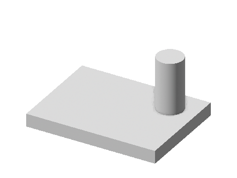
Sizes and pairs
A size is one number for every side, or an array of them: rect(10) is a square, rect([10, 5]) a rectangle.
Points are arrays too, [x, y] or [x, y, z].
Integers are converted, so 10 and 10.0 are the same.
Two numbers of one kind go as a pair, in this order:
[outer, inner], the radii oftube,annulusandstar[bottom, top], the radii ofconeand the rims of an extrusion[z0, z1], a height fromz0up toz1
A tube with radii of 10 and 8, on a cone with radii of 14 and 10.
union( cone([14, 10], [0, 5]), tube([10, 8], [5, 30]) )
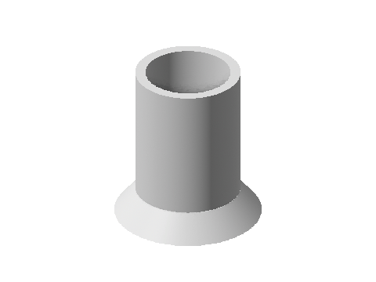
Options
Options go in one map, the last argument: cylinder(5, 20, #{round: 1, anchor: "bottom"}).
Any of them may be left out.
An option a function does not know is an error that names it, so a misspelt one does not go unnoticed.
#{sides: n} makes a cylinder a prism and a cone a pyramid.
A hexagonal prism standing on z = 0, its top rim rounded.
cylinder(10, [0, 8], #{sides: 6, round: [0, 1]})
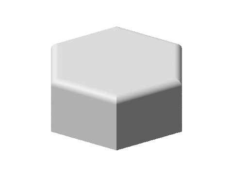
Rounding and chamfering
Shapes with edges take #{round: r} or #{chamfer: c}.
A cylinder’s or an extrusion’s rims take a pair, [bottom, top], with 0 for a sharp rim.
union_round and the other rounded combinations take a radius too.
A radius or a chamfer may vary over space.
It is then a tree, such as lerp(1, 3, smoothstep(0, 10, z)).
For an extrusion’s rims, it may also be a function of t or keyframes in t, where t runs from 0 at the bottom to 1 at the top.
A size that fades to 0 leaves a sharp edge there.
Such a tree is read in the shape’s own coordinates, centred on the origin, before its anchor and any move.
A cuboid 12 high with anchor: "bottom" sees its top at z = 6 in its round, not at z = 12.
- With a varying size, the field is a distance to first order, as close as with a fixed size.
- It is divided by the length of its gradient, worked out from the size’s own gradient and a second evaluation of the shapes.
- So a varying size costs about twice as much;
#{normalize: false}skips the correction. - Without the correction, the field would be off by up to 0.41 times how fast the size changes, in mm per mm.
A block with every edge chamfered by 1.
cuboid([30, 20, 10], #{chamfer: 1})
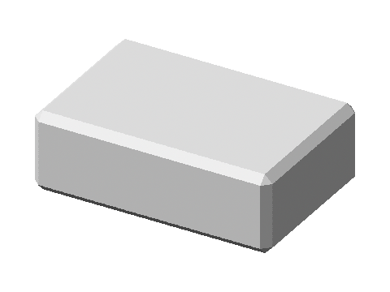
A plate whose corners grow rounder towards +X.
let corner = lerp(1, 6, linstep(-20, 20, x)); rect([40, 20], #{round: corner}).extrude([0, 4])
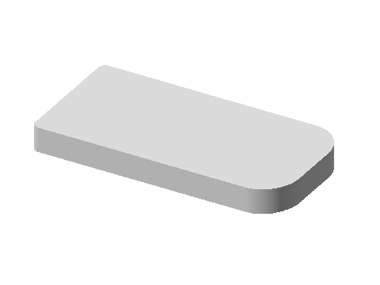
Methods
Every function whose first argument is a shape is also a method of the shape: offset(s, 1) is s.offset(1).
A chain of methods reads in the order they apply.
An open box: a rectangle grown by 3, extruded, hollowed to a 1 mm wall, and cut open at z = 9.
rect([30, 20]) .offset(3) .extrude([0, 10]) .shell(1) .intersection(z - 9)
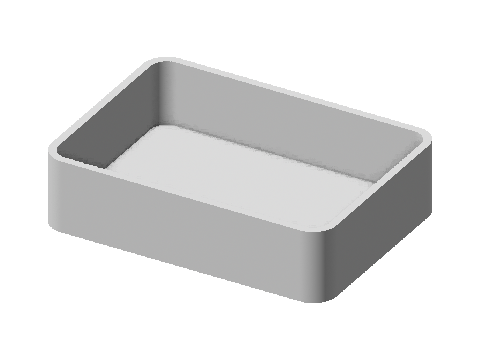
Arrays
Arrays of copies start at the original and go along their step.
The step comes before the count: linear_array(s, [10, 0], 4).
#{center: true} centres the copies on the original instead.
Endless repetitions, as repeat makes them, are centred on the origin.
A strip with a row of four holes, centred on it.
let plate = cuboid([50, 15, 4]); let holes = cylinder(2, 10) .linear_array([12, 0], 4, #{center: true}); plate.difference(holes)
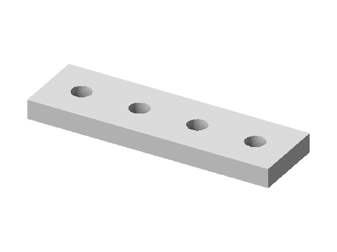
Angles in degrees
The prelude’s angles are in degrees.
sind, cosd, tand, asind, acosd, atand and atan2d take and give degrees.
fidget’s own sin, cos and the others work in radians.
Five pegs round a disc, placed with cosd and sind.
let peg = |a| cylinder(2, [3, 10]) .move([18 * cosd(a), 18 * sind(a)]); let pegs = union([0, 72, 144, 216, 288].map(peg)); cylinder(25, [0, 3]).union(pegs)
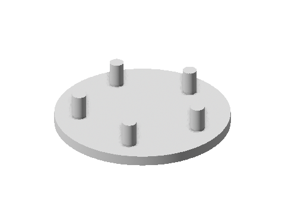
Field quality
The notes of each function’s documentation start with how well its field measures distance:
- exact
- the distance to the surface, everywhere
- exact outside, exact inside
- the distance on that side, and a bound on the other
- first-order
- close to the distance near the surface, as
normalize_zmakes it - approx
- close to the distance, within the error it names
- bound
- never more than the distance, but it may be less
- steep
- more than the distance, by up to the factor it names, which makes offsets come out thinner
See Exact distances and bounds for why it matters.
A bowl: a sphere’s exact field, shelled 1 thick and cut at its equator.
sphere(10).shell(1).intersection(z)
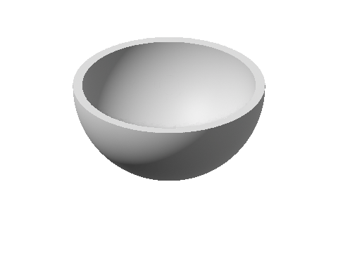
Math helpers
- math · keycap#
clamp(v: Tree, lo: Tree, hi: Tree): Tree Limits
vto the range fromlotohi.v- the value
lo,hi- the range’s ends,
lo <= hi
Below
lothe result islo, abovehiit ishi. It ismin(max(v, lo), hi).See alsolinstep,smoothstep.Example A slot 6 mm wide, as the distance to a segment from x = -10 to 10, less 3.
hypot(x - clamp(x, -10, 10), y) - 3
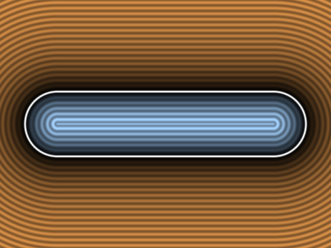
- math · keycap#
saturate(v: Tree): Tree Limits
vto the range from 0 to 1.v- the value
It is
clamp(v, 0, 1).Notes- Named as in HLSL, Direct3D’s shading language.
See alsoclamp,linstep.Example A plate whose top edge rises 10 mm over 20 mm from x = 0, flat on either side.
rect([60, 30]).intersection(y - 10 * saturate(x / 20))
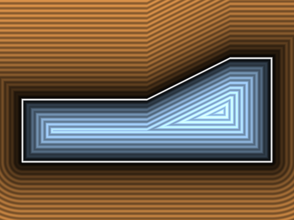
- math · keycap#
lerp(a: Tree | Tree[], b: Tree | Tree[], t: Tree): Tree | Tree[] Linear interpolation, lerp for short: the value
tof the way fromatob.a,b- the ends, or arrays of the same length, such as points
t- 0 at
aand 1 atb; not clamped, so it may go beyond them
Arrays are interpolated element by element, so
lerpmoves points and lists of points too. Two shapes blend as fields, into a shape between the two.Notes- GLSL, the OpenGL Shading Language, calls it
mix; fidget’s ownmixis a hash for random numbers.
See alsolinstep,keyframes,morph.ReferencesExample A shape halfway between a hexagon 40 mm across its flats and a circle.
lerp(hexagon_af(40), circle(20), 0.5)
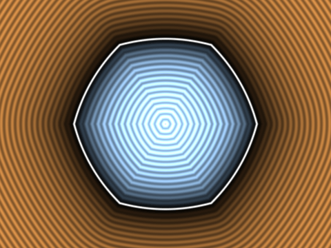
Example The point a quarter of the way from one point to another.
lerp([0, 10], [20, 30], 0.25)
[5.0, 15.0]- math · keycap#
rescale(v: Tree, from: [Tree, Tree], to: [Tree, Tree]): Tree vcarried from one range to another: fromfrom[0]toto[0], fromfrom[1]toto[1], and in between and beyond along the same line.v- the value
from[a, b], the rangevcomes from,a != bto[c, d], the range it goes to
It is
lerp(c, d, (v - a) / (b - a)), not clamped.lerp(c, d, linstep(a, b, v))is the same, clamped to the range fromctod.Notes- Often called
maporremapelsewhere; fidget’sremapmoves a shape’s coordinates instead.
See alsolerp,linstep.Example A cone whose radius goes from 10 at z = 0 to 2 at z = 20.
let r = rescale(z, [0, 20], [10, 2]); normalize_z(hypot(x, y) - r) .intersection(slab([0, 20]))
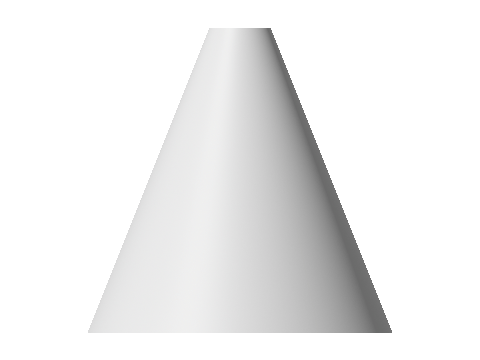
- math · keycap#
step(edge: Tree, v: Tree): Tree A sudden step from 0 to 1 as
vreachesedge.edge- where it steps
v- the value
The result is 0 where
vis belowedge, and 1 elsewhere. On trees, its gradient is 0, ascompare’s is.Notes- The same as
stepin GLSL, the OpenGL Shading Language.
See alsolinstep,smoothstep,compare.Example A post of radius 6 below z = 10 and of radius 3 above.
let r = lerp(6, 3, step(10, z)); (hypot(x, y) - r).intersection(slab([0, 20]))
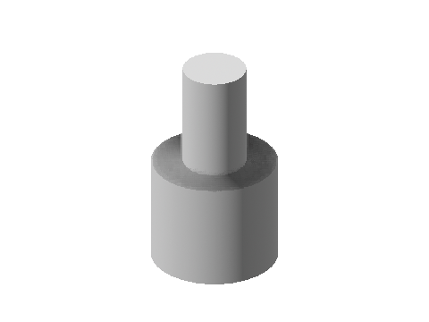
- math · keycap#
linstep(e0: Tree, e1: Tree, v: Tree): Tree A straight step from 0 to 1 as
vgoes from edgee0to edgee1.e0,e1- the edges,
e0 != e1 v- the value
The result is 0 at
e0and beyond it, 1 ate1and beyond it, and changes evenly between.linstep(z0, z1, z)is how far up the slab fromz0toz1a point is: thetthatlerpand the easings take.See alsosmoothstep,smootherstep,lerp,ease.Example A shaft that narrows from 15 to 5 mm in radius between z = 10 and z = 30.
let r = lerp(15, 5, linstep(10, 30, z)); normalize_z(hypot(x, y) - r) .intersection(max(-z, z - 40))
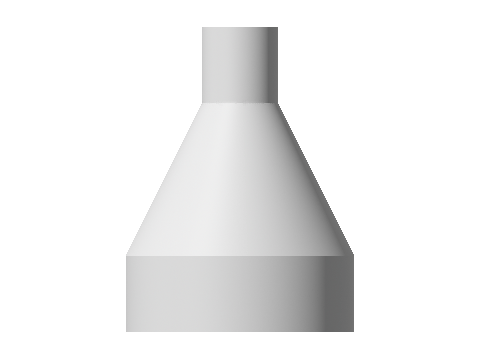
Example The graph of
linstep, inside below the curvey - 20 * linstep(0, 20, x)
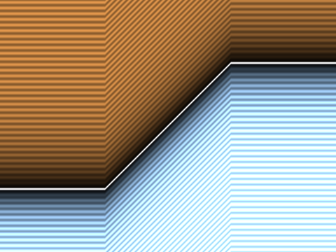
- math · keycap#
smoothstep(e0: Tree, e1: Tree, v: Tree): Tree A smooth step from 0 to 1 as
vgoes from edgee0to edgee1.e0,e1- the edges,
e0 != e1 v- the value
The result is 0 at
e0and beyond it, and 1 ate1and beyond it. Between, it is3 t^2 - 2 t^3, withtaslinstepgives it. Its slope is 0 at both edges, so a value that follows it starts and stops changing gently.Notes- The same as
smoothstepin GLSL, the OpenGL Shading Language. - Its curvature jumps at the edges;
smootherstep’s does not.
See alsosmootherstep,linstep,ease_in_out_sine.ReferencesExample A bottle, its body joined to its neck by a smooth shoulder.
let r = lerp(15, 6, smoothstep(20, 30, z)); normalize_z(hypot(x, y) - r) .intersection(max(-z, z - 40))
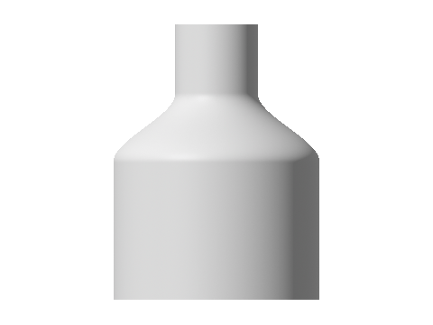
Example The graph of
smoothstep, inside below the curvey - 20 * smoothstep(0, 20, x)
- math · keycap#
fract(v: Tree): Tree The fractional part of
v:v - floor(v), from 0 up to 1, for a negativevtoo.v- the value
A fractional part of a coordinate rises from 0 to 1 across every cell 1 wide, for a pattern that repeats.
Notes- Field: a step at every integer, as for
floor. - The same as
fractin GLSL; Rhai’s ownfractionhas the sign ofv.
See alsofloor,mod.Example A plate with a sawtooth edge, its teeth 8 mm apart.
rect([40, 20]).intersection(y - 4 * fract(x / 8))
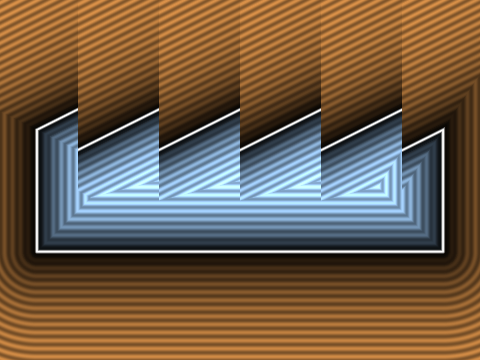
- math · keycap#
mod(a: Tree, b: Tree): Tree The remainder of
adivided byb, from 0 up toabs(b), for a negativeaorbtoo.a- the value
b- the divisor, not 0
It is the Euclidean remainder, which
%gives on trees. Between two numbers%is Rhai’s, which has the sign ofa, so-7 % 3is -1, butmod(-7, 3)is 2.Notes- GLSL’s
modhas the sign ofb; the two agree for a positiveb.
See also%,fract.ReferencesExample The remainder of -7 divided by 3.
mod(-7, 3)
2.0- math · keycap#
hypot(a: Tree, b: Tree): Treehypot(a: Tree, b: Tree, c: Tree): Tree The length of
[a, b]: the hypotenuse of a right triangle whose legs areaandb.a,b- the legs
hypot(x, y)is the distance from the Z axis.See alsonorm.Example A torus, as the distance from a circle of radius 15 in the XY plane, less 4.
hypot(hypot(x, y) - 15, z) - 4
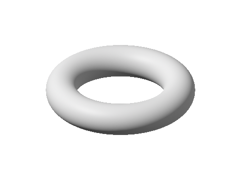
The length of
[a, b, c].a,b,c- the components
hypot(x, y, z)is the distance from the origin.See alsonorm.Example A capsule, as the distance from a segment from z = -10 to 10, less 4.
hypot(x, y, z - clamp(z, -10, 10)) - 4
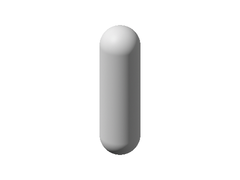
- math · keycap#
sind(a: Tree): Tree The sine of an angle in degrees.
a- the angle, in degrees
fidget’s own
sin,cosandtantake radians. On numbers, the angles whose sine is a whole number or a half, such as 30 and 180, give it exactly.See alsocosd,tand,asind.From OpenSCADsintakes degrees there, and gives these angles exactly too.Example The point 20 mm from the origin at 60 degrees from +X.
[20 * cosd(60), 20 * sind(60)]
[10.0, 17.32050807568877]- math · keycap#
cosd(a: Tree): Tree The cosine of an angle in degrees.
a- the angle, in degrees
On numbers, the angles whose cosine is a whole number or a half, such as 60 and 90, give it exactly.
See alsosind,tand,acosd.Example A plate whose top edge waves 3 mm up and down, once every 18 mm.
rect([72, 40]) .intersection(y - 10 - 3 * cosd(20 * x))
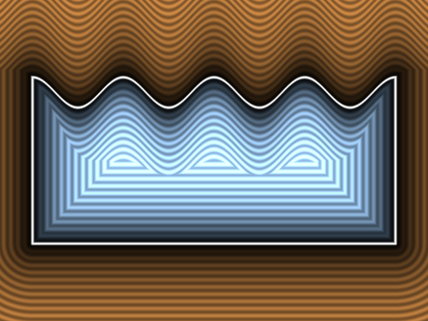
- math · keycap#
tand(a: Tree): Tree The tangent of an angle in degrees.
a- the angle, in degrees
On numbers, the angles whose tangent is 0, 1 or -1, such as 45 and 180, give it exactly.
See alsosind,cosd,atand.Example How far a 30-degree slope rises over 10 mm.
10 * tand(30)
5.773502691896257- math · keycap#
asind(v: Tree): Tree The arcsine of
v, in degrees, from -90 to 90.v- the sine, from -1 to 1
fidget’s own
asin,acos,atanandatan2give radians.See alsosind,acosd,atand.Example The angle of a ramp 10 mm long that rises 3 mm.
asind(3.0 / 10)
17.457603123722095- math · keycap#
acosd(v: Tree): Tree The arccosine of
v, in degrees, from 0 to 180.v- the cosine, from -1 to 1
See alsocosd,asind,atand.Example The angle of a triangle with sides of 4 and 5 mm, opposite its third side of 6 mm.
acosd((4 * 4 + 5 * 5 - 6 * 6) / (2.0 * 4 * 5))
82.81924421854173- math · keycap#
atand(v: Tree): Tree The arctangent of
v, in degrees, from -90 to 90.v- the tangent
See alsotand,atan2d,asind.Example The angle of a slope that rises 3 mm over 4 mm.
atand(3.0 / 4)
36.86989764584402- math · keycap#
atan2d(y: Tree, x: Tree): Tree The two-argument arctangent in degrees: the angle of the point (
x,y) from +X, anticlockwise, from -180 to 180.y,x- the point’s coordinates,
yfirst, as inatan2
On trees,
atan2d(y, x)is each point’s angle about the Z axis.See alsoatand,sind,cosd.ReferencesExample The direction of the point [-1, 1].
atan2d(1, -1)
135.0- math · keycap#
dot(a: Tree[], b: Tree[]): Tree The dot product of two vectors of the same length.
a,b- the vectors
See alsocross,norm.ReferencesExample How far the point [3, 4] lies along the direction [0.6, 0.8].
dot([3, 4], [0.6, 0.8])
5.0- math · keycap#
cross(a: Vec3, b: Vec3): Vec3cross(a: Vec2, b: Vec2): number The cross product of two vectors.
a,b- two 3D vectors, or two 2D ones
Of two 3D vectors, it is square to both, by the right-hand rule, and as long as the area of the parallelogram they span. Of two 2D vectors, it is that vector’s Z: positive when
bturns anticlockwise froma.See alsodot,normalize,normal2.ReferencesExample The normal of the XY plane, from two of its directions.
cross([1, 0, 0], [0, 1, 0])
[0.0, 0.0, 1.0]Example Which way one 2D direction turns from another.
cross([1, 0], [0, 1])
1.0- math · keycap#
norm(v: Tree[]): Tree The length of a vector.
v- the vector
See alsonormalize,hypot,dot.Example The distance from the point [10, 10] to [30, 25].
norm([30 - 10, 25 - 10])
25.0- math · keycap#
normalize(v: Tree[]): Tree[] A vector scaled to length 1: its direction.
v- the vector; one of length 0 is an error
See alsonorm,normal2.Example The direction from the origin towards [3, 4].
normalize([3, 4])
[0.6, 0.8]- math · keycap#
normal2(a: Vec2, b: Vec2): Vec2 The unit normal of the 2D segment from
atob, on its left.a,b- the segment’s ends
It is the segment’s direction turned a quarter anticlockwise. Along an outline that runs anticlockwise, it points inwards.
See alsonormalize,cross.Example The normal on the left of a segment along +X.
normal2([0, 0], [10, 0])
[0.0, 1.0]
2D shapes
- 2D · keycap#
rect(size: Vec2 | number,opts: #{ round?: Tree, chamfer?: Tree, anchor?: Anchor2, normalize?: bool } = #{},): Shapetype Anchor2 = Vec2 | "center" | "left" | "right" | "front" | "back" Rectangle centred on the origin, its corners sharp, rounded or chamfered.
size[width, height], or one number for a squareoptsround- the corners’ radius, clamped to half the shorter side; it may vary over space
chamfer- how far a 45-degree chamfer at each corner cuts into each side, clamped likewise; it may vary over space
anchor- the point put on the origin, from
[-1, -1], the -X -Y corner, to[1, 1]; or a name, such as"left", the middle of the -X side normalizefalseto skip the correction that keeps the field a distance whenroundorchamfervaries; see the notes
A rectangle has
roundorchamfer, not both. Aroundof half the shorter side gives a stadium, with a half circle at each end.Notes- Field: exact, rounded or chamfered too.
- fidget’s
rectangleis only a bound beyond its corners, so its offsets keep sharp corners. - A
roundorchamferthat varies keeps the field a distance to first order, at the cost of a second evaluation. normalize: falseskips that correction: twice as fast, but offsets and shells come out uneven.
See alsorectangle,cuboid,rounded_polygon.Example A plate with rounded corners and a hole at each corner.
let holes = circle(1.7) .grid_array([32, 12], [2, 2], #{center: true}); rect([40, 20], #{round: 3}).difference(holes)
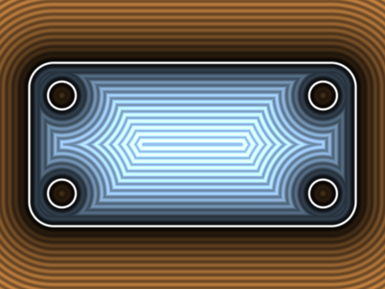
Example A tab whose corners are rounded more towards +X.
let corner = lerp(1, 6, linstep(-10, 10, x)); rect(20, #{round: corner})
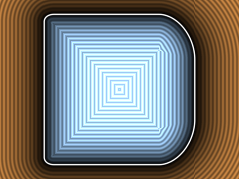
- 2D · keycap#
annulus(r: [Tree, Tree], opts: #{ anchor?: Anchor2 } = #{}): Shapetype Anchor2 = Vec2 | "center" | "left" | "right" | "front" | "back" Ring between two circles centred on the origin.
r[outer, inner], the radii, the inner one smaller; either may vary over spaceoptsanchor- the point put on the origin, as for
rect
Notes- Field: exact.
See alsotube,arc_stroke,shell.ReferencesExample A washer for a 3 mm screw.
annulus([3.5, 1.6])
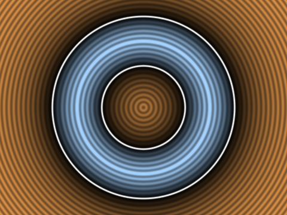
- 2D · keycap#
ellipse(radii: Vec2 | number, opts: #{ anchor?: Anchor2 } = #{}): Shapetype Anchor2 = Vec2 | "center" | "left" | "right" | "front" | "back" Ellipse centred on the origin, its radii along X and Y.
radii[rx, ry], the radius along X and the one along Y, or one number for a circleoptsanchor- the point put on the origin, as for
rect
Notes- Field: close to a distance. It is exact on the outline and on the axes, and a little off in between, so offsets and rounded combinations come out about the size they are given.
circle(1).scale([rx, ry])has the same outline, but its field is too small by up to a factor of the larger radius.
See alsocircle,squircle.References- Inigo Quilez, Ellipsoid SDF, the same estimate in 3D
From OpenSCADscale([rx, ry]) circle(1)isellipse([rx, ry]).Example An oval window in a panel, for a cable to pass through.
let plate = rect([40, 25], #{round: 2}); let hole = ellipse([10, 5]); plate.difference(hole)
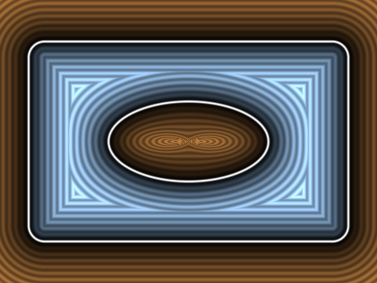
- 2D · keycap#
teardrop(r: number, opts: #{ anchor?: Anchor2 } = #{}): Shapetype Anchor2 = Vec2 | "center" | "left" | "right" | "front" | "back" Circle with a 90-degree point towards +Y, the cross-section of a hole that prints on its side.
r- the radius of the round part
optsanchor- the point put on the origin, as for
rect; the box reaches up to the point
The point is
r * sqrt(2)from the centre. Its two sides lean at 45 degrees, so a horizontal hole with this cross-section prints without support. Extruded and turned byrotate_x(90), the hole runs along Y with its point up.Notes- Field: exact.
See alsocircle,extrude.Example A hole for a 3 mm screw, along Y through a plate, its point up.
let block = cuboid([16, 6, 10]); let hole = teardrop(1.7).extrude(8).rotate_x(90); block.difference(hole)
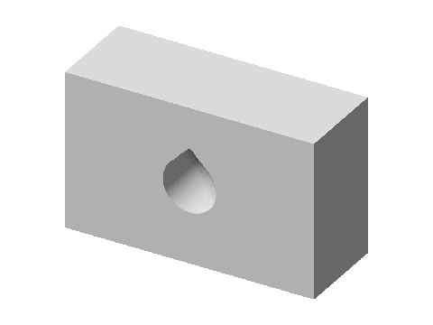
Example The same hole cut flat at the top, a short span that the printer bridges.
let block = cuboid([16, 6, 10]); let hole = max(teardrop(1.7), y - 1.7) .extrude(8) .rotate_x(90); block.difference(hole)
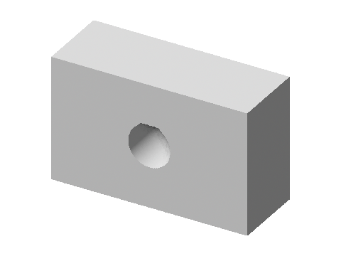
- 2D · keycap#
wedge(angles: [Tree, Tree]): Shape Endless wedge between two angles about the Z axis, for cutting a part of a shape out.
angles[from, to], in degrees anticlockwise from +X;tois abovefromby at most 360
The wedge holds every point whose direction from the Z axis lies between the angles. It has no end, outwards or along Z. A shape intersected with it keeps the part between the angles.
Notes- Field: exact, in 2D and in 3D.
- About 20 operations.
See alsosector,revolve.Example Three quarters of a tube.
tube([10, 7], 6) .intersection(wedge([0, 270]))
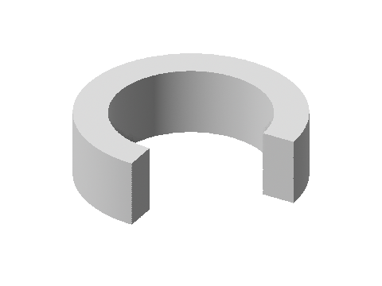
- 2D · keycap#
sector(r: Tree, angles: [Tree, Tree]): Shape Pie slice: the part of a disc centred on the origin between two angles.
r- the radius; it may vary over space
angles[from, to], in degrees anticlockwise from +X;tois abovefromby at most 360
Notes- Field: exact.
- About 30 operations.
See alsowedge,arc_stroke.References- Inigo Quilez, 2D distance functions, “Pie”
- Circular sector, Wikipedia
Example A round lid with an opening of 90 degrees.
circle(25) .difference(sector(20, [45, 135]))
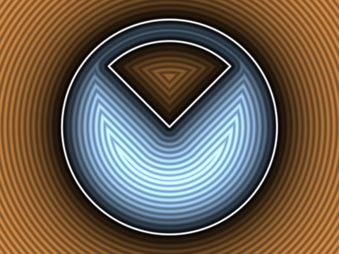
- 2D · keycap#
polar_outline(r: Tree, dr: Tree): Shapepolar_outline(r: (a: Tree) => Tree): Shape Closed outline given by its radius in each direction from the origin.
r- the radius towards each point, positive; a tree that depends only on the direction, such as a tree of
atan2(y, x), or a function ofa, the direction in degrees anticlockwise from +X dr- the derivative of
rby the angle, anticlockwise, in radians
Every ray from the origin must cross the outline once. Given a function, the derivative comes from a second call a tenth of a degree further round.
The field is the gap along the ray to the outline,
hypot(x, y) - r, times the cosine of the angle between the ray and the outline’s normal. That cosine is1 / sqrt(1 + (dr / r)^2).Notes- Field: a distance to first order, close near the outline where it bends gently.
- The function form costs two evaluations of
r.
See alsomorph,squircle_ray,polygon.References- Polar coordinate system, Wikipedia
- Star domain, Wikipedia, the outlines it takes
From OpenSCADpolygon([for (a = [0 : 359]) r(a) * [cos(a), sin(a)]])ispolar_outline(|a| r(a)).Example A knob with five lobes to grip, its edges rounded.
polar_outline(|a| 15 + 2 * cosd(5 * a)) .extrude(10, #{round: 1})
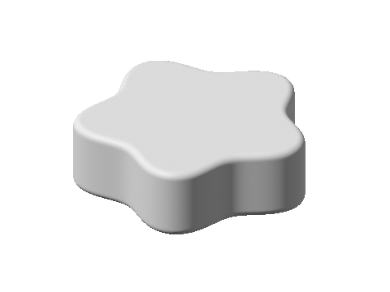
- 2D · keycap#
circle_ray(r: Tree): Raytype Ray = #{r: Tree,slope: Tree,} Circle centred on the origin as a ray, its radius in each direction, for
morph.r- the radius; it may vary over space
The ray is
#{r: r, slope: 0}:ris the radius towards each point, andslopethe radius’s derivative by the angle, over the radius.See alsomorph,polygon_ray,star_ray,squircle_ray.Example A circle that turns into a hexagon from z = 0 to 30.
let disc = circle_ray(10); let hexagon = polygon_ray(6, 12); morph(disc, hexagon, linstep(0, 30, z)) .normalize_z() .intersection(max(-z, z - 30))
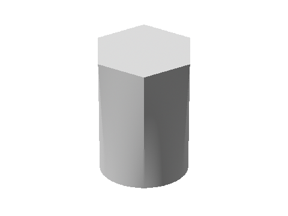
- 2D · keycap#
polygon_ray(n: number, r: Tree): Raytype Ray = #{r: Tree,slope: Tree,} regular_polygon(n, r)as a ray, its radius in each direction, formorph.n- the number of sides, 3 or more
r- the circumradius, from the centre to a vertex; it may vary over space
A vertex is on +X. The ray’s
ris the radius towards each point, and itsslopethe radius’s derivative by the angle, over the radius.Notes- Both are exact.
See alsomorph,regular_polygon,circle_ray.Example A square that turns into a circle from z = 0 to 30.
let square = polygon_ray(4, 12); let disc = circle_ray(10); morph(square, disc, linstep(0, 30, z)) .normalize_z() .intersection(max(-z, z - 30))
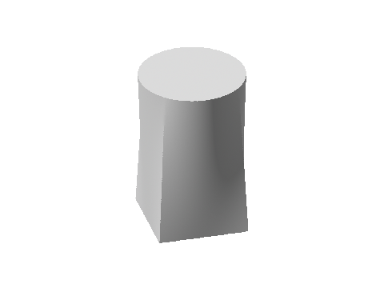
- 2D · keycap#
star_ray(n: number, r: [Tree, Tree]): Raytype Ray = #{r: Tree,slope: Tree,} star(n, r)as a ray, its radius in each direction, formorph.n- the number of points, 2 or more
r[outer, inner], the radius of the points and that of the inner corners; either may vary over space
A point is on +X. The ray’s
ris the radius towards each point, and itsslopethe radius’s derivative by the angle, over the radius.Notes- Both are exact.
See alsomorph,star,polygon_ray.Example A hexagram that turns into a hexagon from z = 0 to 30.
let star = star_ray(6, [12, 7]); let hexagon = polygon_ray(6, 12); morph(star, hexagon, linstep(0, 30, z)) .normalize_z() .intersection(max(-z, z - 30))
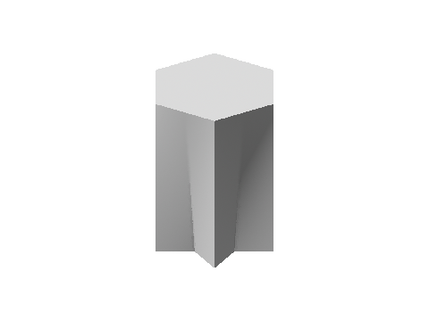
- 2D · keycap#
squircle_ray(u: Tree, v: Tree, s: number): Raytype Ray = #{r: Tree,slope: Tree,} The outline of
squircle(1, s)as a ray, its radius towards a point, formorph.u,v- the point, in any plane:
xandy, or coordinates within a tilted slice s- the squareness, from 0 up to below 1, as for
squircle
The ray’s
ris the distance from the origin to the outline along the ray through(u, v). Itsslopeis the derivative ofrby the angle, overr: the tangent of the angle between the ray and the outline’s normal. At the origin, which has no direction,ris 1 andslope0.A ray scales by multiplying its
r, and its size may change with height.morphblends two rays direction by direction, andpolar_outlinemakes a shape of one.Notes- Both are exact.
See alsosquircle,morph,polar_outline,loft_tilted.References- Squircle, Wikipedia, the Fernández-Guasti squircle
Example A keycap’s body, from a soft squircle at the bottom to a smaller, squarer one at the top.
let a = squircle_ray(x, y, 0.8); let b = squircle_ray(x, y, 0.95); let start = #{r: 9 * a.r, slope: a.slope}; let end = #{r: 6 * b.r, slope: b.slope}; morph(start, end, linstep(0, 8, z)) .normalize_z() .intersection(max(-z, z - 8))
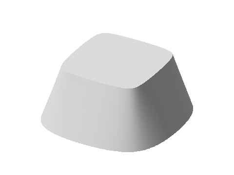
- 2D · keycap#
squircle(r: number, s: number, opts: #{ anchor?: Anchor2 } = #{}): Shapetype Anchor2 = Vec2 | "center" | "left" | "right" | "front" | "back" Squircle centred on the origin, a shape between a circle and a square.
r- half the side of the square, the radius along the axes
s- the squareness, from 0 up to below 1
optsanchor- the point put on the origin, as for
rect
At
s= 0 it is a circle, and assnears 1 it nears a square of side2 r. It touches the square’s sides at their middles, and only its corners round, more tightly assgrows. The outline is the Fernández-Guasti squircle,x^2 + y^2 - s^2 x^2 y^2 / r^2 = r^2.Notes- Field: a distance to first order, as
polar_outlinemakes it fromsquircle_ray, exact on the outline. Forr= 10 ands= 0.9, it is within 2% of the distance up to 2 units off the outline. Ats= 0.99, whose corners are tight, that holds up to half a unit off. - It is not the superellipse,
|x|^n + |y|^n = r^n, which some designs call a squircle too.
See alsosquircle_ray,rect,ellipse.ReferencesFrom OpenSCADkeycap designs sample this curve as
f_squircle.Example A keycap’s soft square, extruded with rounded rims.
squircle(9, 0.9).extrude(8, #{round: 1})
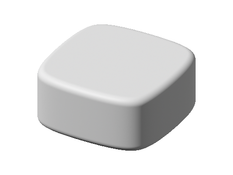
- 2D · keycap#
regular_polygon(n: number,r: Tree,opts: #{ round?: Tree, anchor?: Anchor2, normalize?: bool } = #{},): Shapetype Anchor2 = Vec2 | "center" | "left" | "right" | "front" | "back" Regular polygon centred on the origin, a vertex on +X, its corners sharp or rounded.
n- the number of sides, 3 or more
r- the circumradius, from the centre to a vertex; it may vary over space
optsround- the corners’ radius, at most that of the inscribed circle, which it then gives; it may vary over space
anchor- the point of its bounding box put on the origin, as for
rect normalizefalseto skip the correction that keeps the field a distance whenroundvaries; see the notes
An
rthat is a tree ofzmakes the slices of a pyramid, each exact.Notes- Field: exact, rounded too.
- A
roundthat varies keeps the field a distance to first order, at the cost of a second evaluation. normalize: falseskips that correction: twice as fast, but offsets and shells come out uneven.- About 25 operations; rounded, about 60.
See alsohexagon_af,star,points::regular_polygon,polygon_ray.ReferencesFrom OpenSCADcircle(r, $fn = n)isregular_polygon(n, r), its vertex on +X as well.Example An octagonal coaster with rounded corners.
regular_polygon(8, 45, #{round: 4}) .extrude([0, 4], #{round: [0, 1]})
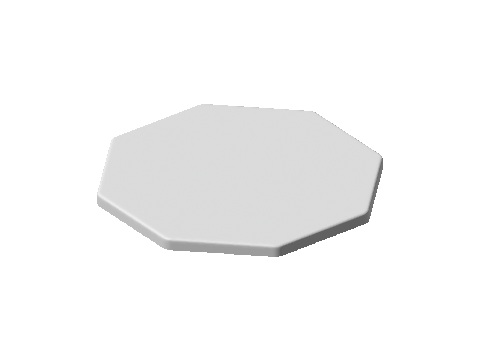
- 2D · keycap#
star(n: number,r: [Tree, Tree],opts: #{ round?: Tree | [number, number], anchor?: Anchor2, normalize?: bool } = #{},): Shapetype Anchor2 = Vec2 | "center" | "left" | "right" | "front" | "back" Star centred on the origin, a point on +X, its corners sharp or rounded.
n- the number of points, 2 or more
r[outer, inner], the radius of the points and that of the inner corners; either may vary over spaceoptsround- the corners’ radius, which may vary over space; or
[outer, inner], two numbers, one for the points and one for the inner corners anchor- the point of its bounding box put on the origin, as for
rect normalizefalseto skip the correction that keeps the field a distance whenroundvaries; see the notes
The outline zigzags between
npoints at radiusouterandninner corners at radiusinner, halfway between them. Atinner = outer * cos(180 / n)the star is the regular polygon ofnsides. Withinnerlarger still, the inner corners point outwards, and the star becomes a rosette. Two triangles of circumradiusrmakestar(6, [r, r / sqrt(3.0)]).Each rounded corner is an arc tangent to its two edges. Two arcs too large for the edge between them are both made smaller, in proportion, until they fit.
Notes- Field: exact, rounded too.
- A
roundthat varies keeps the field a distance to first order, at the cost of a second evaluation. normalize: falseskips that correction: twice as fast, but offsets and shells come out uneven.- About 30 operations; rounded, about 60.
See alsoregular_polygon,points::star,star_ray.ReferencesFrom OpenSCADfor a star whose inner corners point inwards,
offset(-k) offset(2 * k) offset(-k)is#{round: k}, andoffset(-b) offset(b) offset(a) offset(-a)is#{round: [a, b]}.Example A hexagram rounded both ways.
star(6, [40, 40 / sqrt(3.0)], #{round: 6})
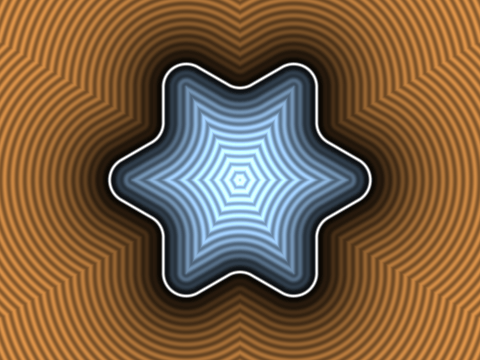
Example A vase that is a hexagon at the bottom and a hexagram at the top.
let inner = lerp(17.32, 11.55, linstep(0, 40, z)); star(6, [20, inner]) .normalize_z() .intersection(max(-z, z - 40))
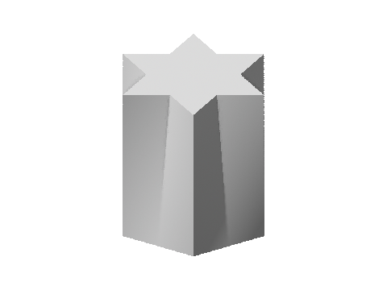
- 2D · keycap#
hexagon_af(af: Tree, opts: #{ anchor?: Anchor2 } = #{}): Shapetype Anchor2 = Vec2 | "center" | "left" | "right" | "front" | "back" Regular hexagon centred on the origin, sized across its flats (“af”), two of its flats parallel to the X axis.
af- the distance across flats, between two opposite sides; it may vary over space
optsanchor- the point of its bounding box put on the origin, as for
rect
Nuts, bolt heads and hex keys are sized across their flats, and their tables give that size.
regular_polygon(6, r)is the same hexagon by its circumradius,af / sqrt(3).Notes- Field: exact.
See alsoregular_polygon.ReferencesExample A pocket for the nut of a 3 mm metric screw, 5.5 mm across flats, with 0.2 mm of clearance.
let cup = cylinder(6, [0, 6]); let pocket = hexagon_af(5.5 + 0.4).extrude([3, 7]); cup.difference(pocket)
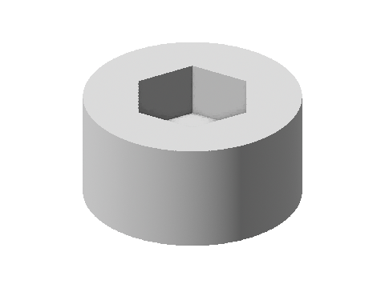
- 2D · keycap#
polygon(points: Outline, opts: #{ convex?: bool } = #{}): Shapetype Outline = Point[] | Point[][]type Point = Vec2 | [number, number, #{ arc: number }] Polygon through a list of points, its corners sharp.
points- the corners, each
[x, y]; or a list of such lists, the loops of an outline with several parts or holes, aspoints::uniongives them optsconvexfalsekeeps a convex polygon on the general field
The points go in order round the outline, either way round, and the last joins back to the first. The outline must not cross itself. Where loops lie inside each other, the inner ones are holes.
A point
[x, y, #{arc: r}]makes the edge to the next point an arc, as inrounded_polygon. Such an outline is arounded_polygonwith every corner sharp.A single loop of straight edges that turns the same way at every corner, with no two points together and no three in a line, is convex. Its field is then built corner by corner: the same values, to rounding, in a third of the operations, and several times faster to render and to export.
Notes- Field: exact.
- About 40 operations a point, about 15 for a convex polygon.
See alsorounded_polygon,points::union,points::miter_offset,points::regular_polygon.References- Inigo Quilez, 2D distance functions, “Polygon”
Example A triangular gusset, 20 by 10, to stiffen a corner.
polygon([[0, 0], [20, 0], [0, 10]]).extrude(3)
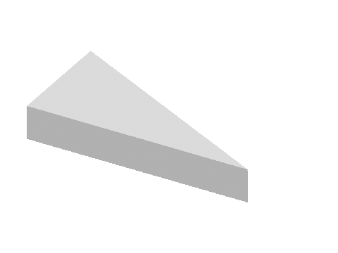
Example A square frame, its hole a loop of its own.
let outer = [[0, 0], [20, 0], [20, 20], [0, 20]]; let inner = [[5, 5], [15, 5], [15, 15], [5, 15]]; polygon([outer, inner])
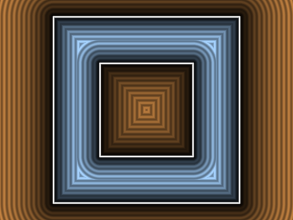
- 2D · keycap#
rounded_polygon(points: Outline,r: number,opts: #{ concave?: number, convex?: bool } = #{},): Shapetype Outline = Point[] | Point[][]type Point = Vec2 | [number, number, number] | [number, number, #{ arc?: number, round?: number }] Polygon through a list of points, its corners rounded and its edges straight or arcs.
points- the corners, each
[x, y]as inpolygon, or[x, y, k]for a corner with a radiuskof its own; or a list of such lists, the loops of an outline with several parts or holes r- the radius of the convex corners
optsconcave- the radius of the concave corners,
runless given convexfalsekeeps a convex polygon on the general field
Each corner is an arc tangent to its two edges.
[x, y, 0]keeps a corner sharp, and anrof 0 keeps every convex one sharp.A point
[x, y, #{arc: a}]makes the edge to the next point an arc of radiusabs(a), the shorter way round. The arc runs anticlockwise for a positivea, clockwise for a negative one.#{arc: a, round: k}gives the point’s corner a radius of its own as well. Where a straight edge meets an arc tangent to it, there is no corner. A circle is two half circles:[[r, 0, #{arc: r}], [-r, 0, #{arc: r}]].Where the arcs of two convex corners, or of two concave ones, do not fit on the edge between them, the edge goes. One arc then joins the edges either side, as an opening or a closing does. Where they turn opposite ways, it throws, naming the edge.
A polygon that
polygontakes as convex, its arcs fitting on every edge with room to spare, is rounded corner by corner. Its field is then the same values, to rounding, in a fifth of the operations, and several times faster to render and to export.Notes- Field: exact.
- About 90 operations a corner, 60 a sharp one, and 5 more where the edge after it is an arc; about 16 a corner for a convex polygon.
See alsopolygon,points::union,offset.References- Opening (morphology), Wikipedia, and closing
From OpenSCADoffset(-r) offset(2 * r) offset(-r)isrounded_polygon(points, r), andoffset(-c) offset(c) offset(r) offset(-r)isrounded_polygon(points, r, #{concave: c}).Example The profile of an angle bracket, its outer corners rounded by 3 and its inner one by 1.
let outline = [ [0, 0], [30, 0], [30, 8], [8, 8], [8, 20], [0, 20], ]; rounded_polygon(outline, 3, #{concave: 1})
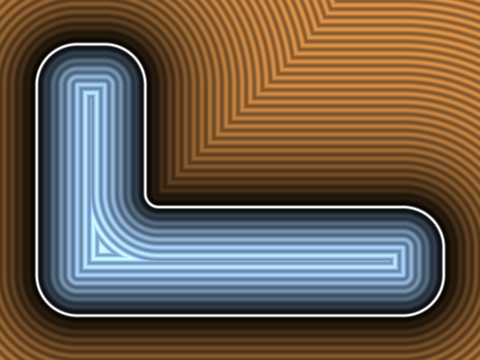
Example A tab with a bulging end, an arc of radius 12, its corners rounded by 2.
let outline = [ [0, 0], [30, 0, #{arc: 12}], [30, 16], [0, 16], ]; rounded_polygon(outline, 2)
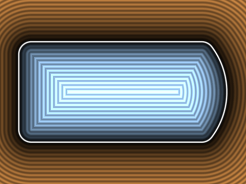
- 2D · keycap#
stroke(points: Vec2[],width: Tree | ((t: Tree) => Tree),opts: #{ caps?: "round" | "butt", closed?: bool } = #{},): Shape Line through a list of points, drawn with a pen of the given width.
points- the line’s points, each
[x, y], at least two width- the stroke’s full width, which may vary over space; or a function of
t, how far along the line, from 0 at its start to 1 at its end optscaps"round"ends, the default, or"butt", cut square at the first and the last pointclosedtruejoins the last point back to the first, for a line with no ends
The stroke holds every point within half of
widthof the line. Where the line turns, its corner is round on the outside, whatever the caps. Two points make a stadium, the shape of a slot. A function oftmakes a stroke that tapers;tgrows with the length drawn.Notes- Field: exact outside; inside, where the segments overlap, a bound. With a width that changes, a bound while it changes slowly.
- About 25 operations a segment.
See alsoarc_stroke,bezier_stroke,offset.ReferencesFrom OpenSCADstroke_linedraws its ends as#{caps: "butt"}does.Example A slot 10 long in a plate, for a 3 mm screw to slide in.
let plate = rect([30, 15], #{round: 2}); let slot = stroke([[-5, 0], [5, 0]], 3.4); plate.difference(slot)
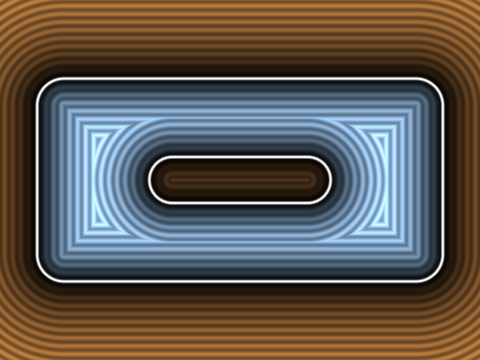
Example A hook’s arm that tapers from 4 wide to 1.
let path = [[0, 0], [20, 0], [25, 10]]; stroke(path, |t| lerp(4.0, 1.0, t))
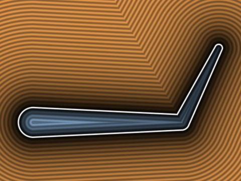
- 2D · keycap#
arc_stroke(r: Tree,angles: [Tree, Tree],width: Tree,opts: #{ caps?: "round" | "butt" } = #{},): Shape Arc of a circle centred on the origin, drawn with a pen of the given width.
r- the arc’s radius, to the middle of the stroke; it may vary over space
angles[from, to], in degrees anticlockwise from +X;tois abovefromby at most 360width- the stroke’s full width; it may vary over space
optscaps"round"ends, the default, or"butt", cut along the radii at the two angles
With butt caps it is the ring from
r - width / 2tor + width / 2, cut to the angles.Notes- Field: exact.
- About 30 operations.
See alsostroke,sector,annulus.References- Inigo Quilez, 2D distance functions, “Arc”
Example A curved slot in a round plate, for a part to turn on a screw through it.
circle(25) .difference(arc_stroke(17, [-60, 60], 3.4))
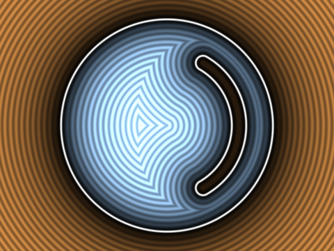
Example A horseshoe-shaped clip, its ends cut square.
arc_stroke(15, [-45, 225], 6, #{caps: "butt"})
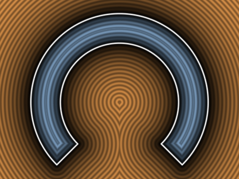
3D shapes
- 3D · keycap#
cuboid(size: Vec3 | number,opts: #{ round?: Tree, chamfer?: Tree, anchor?: Anchor3, normalize?: bool } = #{},): Shapetype Anchor3 = Vec3 | "center" | "left" | "right" | "front" | "back" | "bottom" | "top" Box centred on the origin, its edges sharp, rounded or chamfered.
size[x, y, z], or one number for a cubeoptsround- the radius of every edge and corner, clamped to half the shortest side; it may vary over space
chamfer- how far a 45-degree chamfer at every edge cuts into each face, clamped likewise; it may vary over space
anchor- the point put on the origin, from
[-1, -1, -1], the -X -Y -Z corner, to[1, 1, 1]; or a name, such as"bottom", the middle of the -Z face normalizefalseto skip the correction that keeps the field a distance whenroundorchamfervaries; see the notes
A box has
roundorchamfer, not both. A chamfer cuts the corners too, with a triangle where its three edges meet. A rounded box is a smaller box grown byroundin every direction, so its offsets stay round. For rounded vertical edges only, extrude a roundedrect.Notes- Field: exact, rounded too; chamfered, exact inside and a bound outside near the cut edges and corners.
- fidget’s
boxis only a bound beyond its edges, so its offsets keep sharp edges. - A
roundorchamferthat varies keeps the field a distance to first order, at the cost of a second evaluation. normalize: falseskips that correction: twice as fast, but offsets and shells come out uneven.
See alsobox,rect,octahedron.From OpenSCADminkowski() { cube(s - 2 * r, center = true); sphere(r); }iscuboid(s, #{round: r}).Example A slab standing on z = 0, its edges rounded.
cuboid([40, 20, 5], #{round: 1, anchor: "bottom"})
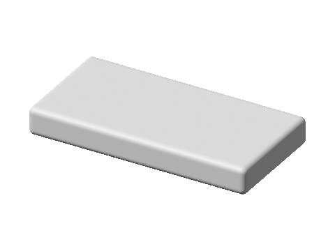
- 3D · keycap#
cylinder(r: Tree,h: Height,opts: #{ round?: Rim, chamfer?: Rim, sides?: number, anchor?: Anchor3, normalize?: bool } = #{},): Shapetype Height = number | [number, number]type Rim = Sched | [Sched, Sched]type Sched = Tree | ((t: Tree) => Tree) | Key[]type Anchor3 = Vec3 | "center" | "left" | "right" | "front" | "back" | "bottom" | "top" Cylinder along Z, centred on the origin, its rims sharp, rounded or chamfered.
r- the radius; it may vary over space
h- the height, centred on z = 0, or
[z0, z1], fromz0up toz1;[0, h]stands the cylinder on z = 0 optsround- the radius of the rims, clamped to
rand half ofh;[bottom, top]for one each chamfer- how far a 45-degree chamfer at the rims cuts into the side and the ends, as for
round sides- the number of sides of a prism to make instead, with a vertex on +X;
ris then the distance from the axis to each vertex anchor- the point put on the origin, as for
cuboid normalizefalseto skip the correction that keeps the field a distance when a rim’s size varies; see the notes
A rim’s size is a number, a tree that varies over space, a function of
t, or keyframes int, withtfrom 0 at the bottom to 1 at the top, as forextrude. One rim may be rounded and the other chamfered.Notes- Field: exact, with rounded rims too; chamfered rims are a bound beyond the chamfer, and a prism’s rounded rims a bound near its edges.
- A rim’s size that varies keeps the field a distance to first order, at the cost of a second evaluation.
normalize: falseskips that correction: twice as fast, but offsets and shells come out uneven.
See alsotube,cone,rod,extrude.From OpenSCADcylinder(h, r, $fn = n)iscylinder(r, [0, h], #{sides: n}).Example A peg standing on z = 0, its top rounded.
cylinder(5, [0, 20], #{round: [0, 1]})
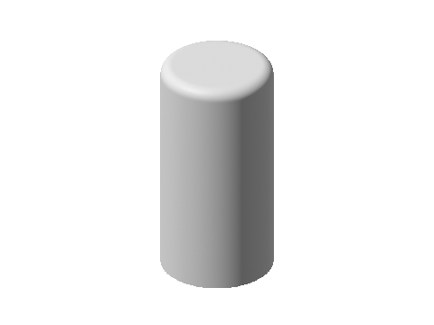
- 3D · keycap#
tube(r: [Tree, Tree],h: Height,opts: #{ round?: Rim, chamfer?: Rim, anchor?: Anchor3, normalize?: bool } = #{},): Shapetype Height = number | [number, number]type Rim = Sched | [Sched, Sched]type Sched = Tree | ((t: Tree) => Tree) | Key[]type Anchor3 = Vec3 | "center" | "left" | "right" | "front" | "back" | "bottom" | "top" Tube along Z, centred on the origin, its rims sharp, rounded or chamfered.
r[outer, inner], the radii, the inner one smaller; either may vary over spaceh- the height, centred on z = 0, or
[z0, z1], fromz0up toz1 optsround,chamfer- the rims, as for
cylinder, clamped to half the wall and half ofh anchor- the point put on the origin, as for
cuboid normalizefalseto skip the correction that keeps the field a distance when a rim’s size varies; see the notes
A rounded or chamfered end has both its outer and its inner edge cut alike.
Notes- Field: exact, with rounded rims too; chamfered rims are a bound beyond the chamfer.
- A rim’s size that varies keeps the field a distance to first order, at the cost of a second evaluation.
normalize: falseskips that correction: twice as fast, but offsets and shells come out uneven.
See alsocylinder,annulus,shell.Example A spacer 8 tall for a 5 mm screw, its rims chamfered.
tube([5, 2.7], [0, 8], #{chamfer: 0.5})
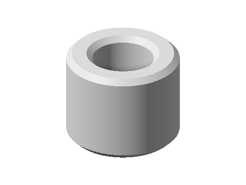
- 3D · keycap#
cone(r: [number, number],h: Height,opts: #{ round?: Rim, sides?: number, anchor?: Anchor3, normalize?: bool } = #{},): Shapetype Height = number | [number, number]type Rim = Sched | [Sched, Sched]type Sched = Tree | ((t: Tree) => Tree) | Key[]type Anchor3 = Vec3 | "center" | "left" | "right" | "front" | "back" | "bottom" | "top" Cone along Z, or a frustum, a cone with its tip cut off, centred on the origin.
r[bottom, top], the radii at the bottom and at the top; either may be 0, for a pointh- the height, centred on z = 0, or
[z0, z1], fromz0up toz1 optsround- the radius of the rims, clamped to the largest that fits;
[bottom, top]for one each sides- the number of sides of a pyramid to make instead, or of a frustum of one, with a vertex on +X; the radii are then distances from the axis to the vertices
anchor- the point put on the origin, as for
cuboid normalizefalseto skip the correction that keeps the field a distance when a rim’s size varies; see the notes
A rim’s size may vary along the cone, as for
cylinder. A rounded point is a ball of the rim’s radius.Notes- Field: exact, with rounded rims too; with
sides, exact inside and a bound outside near the edges between the faces. - Two rims of different sizes are each exact as long as neither reaches the other.
- A rim’s size that varies keeps the field a distance to first order, at the cost of a second evaluation.
normalize: falseskips that correction: twice as fast, but offsets and shells come out uneven.
See alsocylinder,loft.References- Inigo Quilez, Distance functions, “Capped Cone”
From OpenSCADcylinder(h, r1, r2)iscone([r1, r2], [0, h]).Example A foot for a box, standing on z = 0, its rims rounded.
cone([6, 4], [0, 5], #{round: 1})
Example A hexagonal pyramid with a rounded base and tip.
cone([10, 0], [0, 15], #{round: 1, sides: 6})
- 3D · keycap#
torus(r_major: number,r_minor: number,opts: #{ anchor?: Anchor3 } = #{},): Shapetype Anchor3 = Vec3 | "center" | "left" | "right" | "front" | "back" | "bottom" | "top" Torus around the Z axis, centred on the origin.
r_major- the radius of the circle through the middle of the tube
r_minor- the radius of the tube
optsanchor- the point put on the origin, as for
cuboid
Notes- Field: exact.
See alsorevolve,tube.Example An O-ring, 40 across the middle of its tube and 6 thick.
torus(20, 3)
- 3D · keycap#
ellipsoid(radii: Vec3 | number,opts: #{ anchor?: Anchor3 } = #{},): Shapetype Anchor3 = Vec3 | "center" | "left" | "right" | "front" | "back" | "bottom" | "top" Ellipsoid centred on the origin, with its radii along X, Y and Z.
radii[rx, ry, rz], positive, or one number for a sphereoptsanchor- the point put on the origin, as for
cuboid
fidget’s
sphere(1).scale([rx, ry, rz])has the same surface, but its field is off by a factor of the radius along each axis.Notes- Field: approx, as
ellipse’s: exact on the axes and at the surface, off by a little in between.
See alsoellipse,scale_bound.References- Inigo Quilez, Ellipsoid SDF (SDF, signed distance field)
From OpenSCADscale([rx, ry, rz]) sphere(1)isellipsoid([rx, ry, rz]).Example A lentil-shaped bead, 20 across and 8 thick.
ellipsoid([10, 10, 4])
- 3D · keycap#
capsule(a: Vec3, b: Vec3, r: Tree): Shapecapsule(points: Vec3[], r: Tree): Shape Every point within
rof a segment, or of a path of segments: a rod with round ends.a,b- the segment’s ends,
[x, y, z] points- the path’s points, at least two
r- the radius; it may vary over space
Along a path, each segment is a capsule of its own, and their union rounds the joints.
Notes- Field: exact; along a path, exact outside, and a bound inside where the segments overlap.
See alsorod,stroke,elongate.References- Inigo Quilez, Distance functions, “Capsule / Line”
From OpenSCADhull() { translate(a) sphere(r); translate(b) sphere(r); }iscapsule(a, b, r).Example A strut between two points.
capsule([0, 0, 0], [10, 10, 20], 2)
Example A wire hook, bent through four points.
let spine = [[0, 0, 0], [0, 0, 30], [8, 0, 34], [12, 0, 26]]; capsule(spine, 1.5)
- 3D · keycap#
rod(a: Vec3, b: Vec3, r: Tree): Shape Cylinder from
atob, its ends flat and square to it.a,b- the centres of its ends,
[x, y, z], different r- the radius; it may vary over space
It is a
cylinderplaced between two points, without working out the turns that would put it there.Notes- Field: exact.
See alsocapsule,cylinder.Example Two posts and a diagonal brace between them.
let post = cylinder(2, [0, 30]); let brace = rod([-15, 0, 4], [15, 0, 26], 1.5); union(post.move([-15, 0, 0]), post.move([15, 0, 0]), brace)
- 3D · keycap#
octahedron(r: Tree, opts: #{ anchor?: Anchor3 } = #{}): Shapetype Anchor3 = Vec3 | "center" | "left" | "right" | "front" | "back" | "bottom" | "top" Regular octahedron centred on the origin, its vertices on the axes.
r- the distance from the centre to each vertex; it may vary over space
optsanchor- the point put on the origin, as for
cuboid;rmust then be a number
It is every point whose distances from the origin along X, Y and Z add up to at most
r. A box grown by an octahedron has 45-degree chamfers on its edges and corners, ascuboidmakes them withchamfer.Notes- Field: exact.
See alsocuboid,cone.References- Inigo Quilez, Distance functions, “Octahedron”
- Octahedron, Wikipedia
Example A diamond standing on its tip.
octahedron(10)
- 3D · keycap#
half_space(p: Vec3, n: Vec3): Shape Every point behind a plane, given by a point on it and its normal.
p- a point on the plane,
[x, y, z] n- the plane’s normal, pointing out of the solid; any length
It is endless: intersect it with something finite. Several half-spaces intersected make a convex polyhedron, such as a tooth or a blade given by its faces.
Notes- Field: exact.
See alsoplane_through,slab,half,plane.ReferencesExample A tube’s end cut at 45 degrees, for a mitre joint.
tube([10, 8], [0, 40]) .intersection(half_space([0, 0, 30], [1, 0, 1]))
- 3D · keycap#
plane_through(a: Vec3, b: Vec3, c: Vec3): Shape The half-space behind the plane through three points.
a,b,c- three points on the plane, not in a line, anticlockwise seen from outside
The outside is the side that
cross(b - a, c - a)points to.Notes- Field: exact.
See alsohalf_space.From OpenSCADpolyhedronlists a face’s points clockwise seen from outside, so its face[a, b, c]isplane_through(a, c, b).Example A cube with one corner cut off.
let cut = plane_through([10, 0, 10], [10, 10, 0], [0, 10, 10]); cuboid(20).intersection(cut)
- 3D · keycap#
slab(h: Height): Shapetype Height = number | [number, number] Every point between two heights: an endless slab across X and Y.
h- the thickness, centred on z = 0, or
[z0, z1], fromz0up toz1
It is endless: intersect it with something finite, or use
flatten.Notes- Field: exact.
See alsoflatten,half_space.Example A ball cut to a disc 4 thick, its edge round.
sphere(10).intersection(slab(4))
- 3D · keycap#
flatten(shape: Shape, h: Height): Shapeshape.flatten(h: Height): Shapetype Height = number | [number, number] The part of a shape between two heights.
shape- the shape
h- the thickness, centred on z = 0, or
[z0, z1], fromz0up toz1
It is the shape intersected with
slab(h).Notes- Field: exact inside; outside, a bound near the cut edges.
See alsoslab,half.Example A flat washer, 3 thick, cut from the middle of a torus.
torus(20, 5).flatten(3)
- 3D · keycap#
half(shape: Shape, which: string): Shapeshape.half(which: string): Shape The half of a shape on one side of a plane through the origin.
shape- the shape, 2D or 3D
which- the half to keep:
"x+","x-","y+","y-","z+"or"z-";"z+"keeps z >= 0
It splits a part that prints better as two halves, each standing on its cut face.
Notes- Field: exact inside; outside, a bound near the cut edges.
See alsoflatten,half_space,symmetric_x.Example A dome, the top half of a ball.
sphere(10).half("z+")
Extrusion and revolution
Each takes the profile’s slice at z = 0.
- 2D to 3D · keycap#
extrude(shape: Shape,h: Height,opts: #{ round?: Rim, chamfer?: Rim, normalize?: bool, draft?: number, twist?: Sched, scale?: Sched, move?: Move, ease?: Ease, ease_twist?: Ease, ease_scale?: Ease, ease_move?: Ease } = #{},): Shapeshape.extrude(h: Height,opts: #{ round?: Rim, chamfer?: Rim, normalize?: bool, draft?: number, twist?: Sched, scale?: Sched, move?: Move, ease?: Ease, ease_twist?: Ease, ease_scale?: Ease, ease_move?: Ease } = #{},): Shapetype Height = number | [number, number]type Rim = Sched | [Sched, Sched]type Sched = Tree | ((t: Tree) => Tree) | Key[]type Move = [Sched, Sched] | ((t: Tree) => [Tree, Tree]) Extrudes a 2D shape along Z into a solid, its rims sharp, rounded or chamfered.
shape- the 2D profile, in XY
h- the height, centred on z = 0; or
[z0, z1], fromz0up toz1 optsround- the radius of the rims;
[bottom, top]for one each, 0 for a sharp rim chamfer- how much a 45-degree chamfer cuts off the side and the face at the rims, as for
round normalizefalseskips the correction of a rim size that varies over space; twice as fast, but offsets and shells come out unevendraft- the walls’ slope from vertical, in degrees; positive leans them in as they rise, negative out
twist- the profile’s turn about Z, in degrees, anticlockwise looking down
scale- a factor on the profile, about the origin
move[dx, dy], a move of the profileease- how a number for
twist,scaleormoveis reached,"linear"by default; seeease ease_twist,ease_scale,ease_move- the same for one of them
truns from 0 at the bottom to 1 at the top.A rounded rim keeps the side on the profile and curves over into the face. A rim’s size is a number, a tree that varies over space, a function of
t, or keyframes int. The two rims’ sizes together must be less than the height. A small chamfer on the bottom rim hides elephant’s foot, the bulge of a squashed first layer.drafttilts every wall by the same angle, starting from the profile at the bottom.twist,scaleandmovechange the profile as it rises. A number is the value at the top: the bottom is the profile as it is, and the easing takes it from there. A tree, a function oftor keyframes intgive the value at every height instead. The profile is scaled first, then turned, then moved, as inloft.Notes- Field: exact where the profile’s field is, without
draft,twist,scaleormove; rims as below. - Rounded rims are exact along the profile’s edges, straight or curved, and a bound near its corners; chamfered rims are a bound beyond the chamfer.
- With
draft, a distance to first order, asnormalize_slopemakes it. - With
twist,scaleormove, a distance to first order, asnormalize_zmakes it, from a second evaluation of the profile. - A rim size that varies over space also takes a second evaluation, unless
normalizeis false. - Fitted bounds of a turning profile reach as far from the Z axis on every side as the profile does, and may be up to a third larger.
See alsotwist,loft,revolve,extrude_z.References- Inigo Quilez, Distance functions, “Extrusion”
- Draft (engineering), Wikipedia
From OpenSCADlinear_extrude(h, twist = a, scale = k)isextrude(shape, [0, h], #{twist: -a, scale: k}); its twist turns the other way.Example A plate for printing, its top edges rounded and its bottom edge chamfered against elephant’s foot.
rect([40, 20], #{round: 4}) .extrude([0, 6], #{round: [0, 1], chamfer: [0.6, 0]})
Example A mould’s core, its walls drafted by 3 degrees so that the cast comes off.
rect([30, 20], #{round: 3}) .extrude([0, 12], #{draft: 3, round: [0, 1]})
Example A vase’s body, a hexagon that turns by 60 degrees and narrows as it rises.
regular_polygon(6, 20) .extrude([0, 60], #{ twist: 60, scale: 0.7, ease: "in_out_sine", })
- 2D to 3D · keycap#
twist(shape: Shape, angle: Tree): Shapeshape.twist(angle: Tree): Shape Twists a shape round the Z axis, each point by the angle given there.
shape- the shape, usually an extrusion
angle- the turn in degrees, anticlockwise looking down; a tree of the coordinates, such as
9 * z
9 * zturns by a steady 9 degrees per unit of height. An easing ofzgives a turn that speeds up and slows down. A plain number throws: a turn of the whole shape isrotate_z.Notes- Field: steeper than a distance away from the axis, by
sqrt(1 + (k r)^2)at radiusr, wherekis the turn’s rate in radians per unit of height. - So offsets after a twist come out thinner away from the axis;
extrude’s owntwistkeeps its field a distance to first order. - Fitted bounds reach as far from the Z axis on every side as the shape does, and may be up to a third larger.
See alsoextrude,rotate_z.References- Inigo Quilez, Distance functions, “Twist”
Example A twisted handle, a rounded bar turned by a whole turn along its 40 mm.
cuboid([10, 4, 40], #{round: 1}).twist(9 * z)
- 2D to 3D · keycap#
revolve(shape: Shape | Outline,angle: number | [number, number] = 360,opts: #{ sides?: number, round?: number, concave?: number } = #{},): Shapeshape.revolve(angle: number | [number, number] = 360,opts: #{ sides?: number, round?: number, concave?: number } = #{},): Shapetype Outline = Point[] | Point[][]type Point = Vec2 | [number, number, #{ arc: number }] Revolves a 2D profile round the Z axis: the profile’s X becomes the radius and its Y becomes Z.
shape- the profile, in XY; or its points, as
polygontakes them angle- how far round, in degrees, anticlockwise looking down from +X;
[a0, a1]froma0toa1; at most a whole turn optssides- flat facets instead of a round surface, this many in a whole turn, a corner on +X; the profile’s X is the radius to the corners
round,concave- for a profile given as points, the radii of its convex and concave corners, as for
rounded_polygon
optsmay come withoutangle, for a whole turn. A part of a turn ends flat at both ends, in the profile’s plane. Withsides, a part of a turn has its share of the facets, rounded up, and starts at a corner.A profile given as points may touch or cross the axis. Its part at X >= 0 is joined to its mirror image, so the axis is no surface. A profile all at X <= 0 is mirrored first.
Notes- Field: exact where the profile’s field is, for a profile at X > 0 such as a ring or a groove, ends included; exact for a profile given as points, wherever it lies.
- A shape symmetric about X = 0, a whole cross-section such as
rect([2 * r, h]), is exact for a whole turn; for a part of a turn, its ends are a bound behind the axis. - Any other shape that reaches X = 0 has a bound inside, 0 along the axis, so offsets and shells go wrong there; give such a profile as points.
- With
sides, a distance to first order on the facets, from a second evaluation of the profile, and a bound outside near the edges between them. - fidget’s
revolve_yturns round the Y axis, and needs a profile symmetric about X = 0.
See alsobend,sweep,polygon,rounded_polygon,revolve_y.References- Surface of revolution, Wikipedia
- Inigo Quilez, Distance functions, “Revolution”
From OpenSCADrotate_extrude(angle = a, $fn = n)isrevolve(shape, a, #{sides: n}), its facets as OpenSCAD makes them.Example A cup, its profile drawn from the axis, its corners rounded.
let profile = [ [0, 0], [20, 0], [24, 30], [22, 30], [18, 2], [0, 2], ]; revolve(profile, #{round: 0.8})
Example A pipe elbow, a tube’s section turned by a quarter turn.
circle(5) .shell(1) .move([20, 0]) .revolve(90)
Offsets and combinations
- CSG · keycap#
offset(shape: Shape, d: Tree): Shapeshape.offset(d: Tree): Shape Grows a shape by
din every direction, or shrinks it by a negatived.shape- the shape
d- the distance, which may vary over space
Growing rounds the convex corners with radius
d. Shrinking rounds the concave ones.Notes- Field: as
shape’s; the surface moves exactlydwhere that is exact. - On a bound, such as fidget’s
boxorrectangle, the corners move further thandand stay sharp. - A
dthat varies over space makes the field steeper or flatter than a distance, by up to how fastdchanges.
See alsoshell,clearance.Example A 20 mm square grown by 2 mm, its corners rounded.
offset(rect(20), 2)

- CSG · keycap#
shell(shape: Shape, t: Tree): Shapeshape.shell(t: Tree): Shape Hollows a shape, keeping a wall of thickness
tinside its surface.shape- the shape
t- the wall’s thickness, which may vary over space
The outer surface stays where it is. The inner one is that of
offset(shape, -t). The shell is closed; cut it to open it.Notes- Field: exact where
shape’s is. - On a bound, the wall can come out thicker than
t. - On a field steeper than a distance, such as
union_round’s, the wall comes out thinner, down totdivided by the field’s slope.
See alsooffset.Example The lower half of an enclosure, a rounded box with 2 mm walls, open at the top.
cuboid([40, 30, 20], #{round: 3}) .shell(2) .intersection(z - 6)
- CSG · keycap#
clearance(shape: Shape, tool: Shape, gap: Tree): Shapeshape.clearance(tool: Shape, gap: Tree): Shape Cuts
toolout ofshapewith a gap all around it, for parts that slide or press into each other.shape- the shape to cut
tool- the part that goes into the cut
gap- the gap on each side, which may vary over space; about 0.2 mm for a sliding fit and 0.1 mm for a press fit, on most printers
It is
difference(shape, offset(tool, gap)). Wheretool’s field is exact, the gap is even all around, edges included.Notes- Field: a bound at the edges the cut leaves, as
differenceleaves it; elsewhere exact whereshape’s andtool’s are.
See alsooffset,difference_round,difference_chamfer.Example A block with a hole for an 8 mm peg, 0.2 mm wider all round.
let peg = cylinder(4, 20); cuboid([20, 20, 10]).clearance(peg, 0.2)
- CSG · keycap#
union_round(a: Shape | Shape[],shapes: Shape | Shape[],r: Tree,opts: #{ normalize?: bool } = #{},): Shapeunion_round(shapes: Shape[],r: Tree,opts: #{ normalize?: bool } = #{},): Shapea.union_round(shapes: Shape | Shape[],r: Tree,opts: #{ normalize?: bool } = #{},): Shape Union of shapes with a fillet of radius
rwherever they meet.a- a shape, or an array of them
shapes- the shapes to join to
a: one, or an array of any number r- the fillet’s radius, which may vary over space
optsnormalizefalseskips the correction of a varying radius: twice as fast, but offsets and shells of a varying rounding come out uneven
Every joint between two of the shapes gets a fillet. Where three shapes meet, the corner is filled as a ball of radius
rrolled along it would leave it. Elsewhere the shapes stay as they are.A radius that varies over space is corrected for, so the field stays as exact as with a fixed radius, to first order. Where the radius fades to 0, the joint is sharp.
Notes- Field: exact where the surfaces meet at right angles; steeper than a distance where they meet at more than a right angle, with a slope of up to sqrt 2 (sqrt 3 where three meet); a bound where they meet at less.
- About 5 operations a shape; a varying radius evaluates the shapes twice.
- Two surfaces that run side by side within
rof each other bulge out between them, as two boxes on one face do along their seam. Join such parts withunionfirst.
See alsounion_chamfer,smooth_union,intersection_round,difference_round.References- Mercury, hg_sdf:
fOpUnionRound, here for any number of shapes - Fillet (mechanics), Wikipedia
From OpenSCADin 2D,
offset(-r) offset(r)of the union fillets its joints the same way, and the shapes’ own concave corners too.Example A plate with a post and a rib, every joint filleted by 2 mm.
let base = cuboid([40, 40, 4]); let post = cylinder(5, [0, 20]); let rib = cuboid([30, 3, 12], #{anchor: "bottom"}); union_round([base, post, rib], 2)
- CSG · keycap#
intersection_round(a: Shape,shapes: Shape | Shape[],r: Tree,opts: #{ normalize?: bool } = #{},): Shapeintersection_round(shapes: Shape[],r: Tree,opts: #{ normalize?: bool } = #{},): Shapea.intersection_round(shapes: Shape | Shape[],r: Tree,opts: #{ normalize?: bool } = #{},): Shape Intersection of shapes, the edges where they meet rounded with radius
r.a- a shape
shapes- the shapes to intersect with
a: one, or an array of any number r- the edges’ radius, which may vary over space
optsnormalizefalseskips the correction of a varying radius: twice as fast, but offsets and shells of a varying rounding come out uneven
Every edge where the surfaces of two of the shapes meet is rounded. A corner where three meet becomes part of a ball of radius
r. The shapes’ own edges stay as they are.A radius that varies over space is corrected for, as in
union_round. Where the radius fades to 0, the edge is sharp.Notes- Field: exact where the surfaces meet at right angles; steeper than a distance where they meet at more than a right angle, with a slope of up to sqrt 2 (sqrt 3 where three meet); a bound where they meet at less.
- About 5 operations a shape; a varying radius evaluates the shapes twice.
- An array is the shapes to intersect, not their union, unlike in most functions that take shapes.
See alsointersection_chamfer,smooth_intersection,union_round.References- Mercury, hg_sdf:
fOpIntersectionRound, here for any number of shapes
Example A knob’s disc with a flat on one side, every edge rounded by 2 mm.
let post = cylinder(15, 40); intersection_round([post, x - 10, slab(8)], 2)
- CSG · keycap#
difference_round(body: Shape,cutters: Shape | Shape[],r: Tree,opts: #{ normalize?: bool } = #{},): Shapebody.difference_round(cutters: Shape | Shape[],r: Tree,opts: #{ normalize?: bool } = #{},): Shape Cuts
cuttersout ofbody, the edges the cuts leave rounded with radiusr.body- the shape to cut
cutters- one shape, or an array of any number
r- the edges’ radius, which may vary over space
optsnormalizefalseskips the correction of a varying radius: twice as fast, but offsets and shells of a varying rounding come out uneven
The rim of every cut is rounded. So is an edge where two cutters meet inside the body, as where two grooves cross. A screw hole through a plate gets a rounded rim, a groove rounded lips.
A radius that varies over space is corrected for, as in
union_round.Notes- Field: exact where the surfaces meet at right angles; steeper than a distance where they meet at more than a right angle, with a slope of up to sqrt 2 (sqrt 3 where three meet); a bound where they meet at less.
- A cut that only touches the body’s surface leaves a cusp, with no edge to round.
smooth_differencerounds it.
See alsodifference_chamfer,smooth_difference,clearance.References- Mercury, hg_sdf:
fOpIntersectionRound, with the cutters turned inside out
Example A plate with two crossing grooves, the edges they leave rounded by 1 mm.
let plate = cuboid([30, 30, 6]); let slot_x = cuboid([40, 4, 6]).move([0, 0, 3]); let slot_y = cuboid([4, 40, 6]).move([0, 0, 3]); plate.difference_round([slot_x, slot_y], 1)
- CSG · keycap#
union_chamfer(a: Shape | Shape[],shapes: Shape | Shape[],c: Tree,opts: #{ normalize?: bool } = #{},): Shapeunion_chamfer(shapes: Shape[],c: Tree,opts: #{ normalize?: bool } = #{},): Shapea.union_chamfer(shapes: Shape | Shape[],c: Tree,opts: #{ normalize?: bool } = #{},): Shape Union of shapes with a 45-degree chamfer wherever they meet.
a- a shape, or an array of them
shapes- the shapes to join to
a: one, or an array of any number c- the chamfer’s size, which may vary over space
optsnormalizefalseskips the correction of a varying size: twice as fast, but offsets and shells of a varying chamfer come out uneven
Where two surfaces meet at right angles, the chamfer’s legs are
clong on each. Where three shapes meet, each point takes the chamfer between the two nearest. A size that varies over space is corrected for, as inunion_round.Notes- Field: exact where the surfaces meet at right angles; steeper than a distance where they meet at more than a right angle, with a slope of up to sqrt 2; a bound where they meet at less.
- About 6 operations a shape; a varying size evaluates the shapes twice.
See alsounion_round,intersection_chamfer,difference_chamfer.References- Mercury, hg_sdf:
fOpUnionChamfer, here for any number of shapes - Chamfer, Wikipedia
Example A plate with a post, chamfered into it by 2 mm.
cuboid([40, 40, 4]) .union_chamfer(cylinder(5, [0, 20]), 2)
- CSG · keycap#
intersection_chamfer(a: Shape,shapes: Shape | Shape[],c: Tree,opts: #{ normalize?: bool } = #{},): Shapeintersection_chamfer(shapes: Shape[],c: Tree,opts: #{ normalize?: bool } = #{},): Shapea.intersection_chamfer(shapes: Shape | Shape[],c: Tree,opts: #{ normalize?: bool } = #{},): Shape Intersection of shapes, the edges where they meet chamfered.
a- a shape
shapes- the shapes to intersect with
a: one, or an array of any number c- the chamfer’s size, which may vary over space
optsnormalizefalseskips the correction of a varying size: twice as fast, but offsets and shells of a varying chamfer come out uneven
Where two surfaces meet at right angles, the chamfer’s legs are
clong on each. Where three shapes meet, each point takes the chamfer between the two nearest. A size that varies over space is corrected for, as inunion_round.Notes- Field: exact where the surfaces meet at right angles; steeper than a distance where they meet at more than a right angle, with a slope of up to sqrt 2; a bound where they meet at less.
- An array is the shapes to intersect, not their union, unlike in most functions that take shapes.
See alsointersection_round,union_chamfer,difference_chamfer.References- Mercury, hg_sdf:
fOpIntersectionChamfer, here for any number of shapes
Example A hexagonal prism cut to 8 mm, the rims of the cut chamfered by 1 mm.
cylinder(10, 30, #{sides: 6}) .intersection_chamfer(slab(8), 1)
- CSG · keycap#
difference_chamfer(body: Shape,cutters: Shape | Shape[],c: Tree,opts: #{ normalize?: bool } = #{},): Shapebody.difference_chamfer(cutters: Shape | Shape[],c: Tree,opts: #{ normalize?: bool } = #{},): Shape Cuts
cuttersout ofbody, the edges the cuts leave chamfered.body- the shape to cut
cutters- one shape, or an array of any number
c- the chamfer’s size, which may vary over space
optsnormalizefalseskips the correction of a varying size: twice as fast, but offsets and shells of a varying chamfer come out uneven
Where two surfaces meet at right angles, the chamfer’s legs are
clong on each. A cylinder cut this way through a plate leaves a 90-degree countersink on both faces. A size that varies over space is corrected for, as inunion_round.Notes- Field: exact where the surfaces meet at right angles; steeper than a distance where they meet at more than a right angle, with a slope of up to sqrt 2; a bound where they meet at less.
See alsodifference_round,clearance.References- Mercury, hg_sdf:
fOpIntersectionChamfer, with the cutters turned inside out - Countersink, Wikipedia
Example A plate with a hole, countersunk by 1 mm on both faces.
cuboid([30, 30, 5]) .difference_chamfer(cylinder(3, 10), 1)
- CSG · keycap#
smooth_union(a: Shape | Shape[],shapes: Shape | Shape[],k: Tree,opts: #{ kind?: Smooth, normalize?: bool } = #{},): Shapesmooth_union(shapes: Shape[],k: Tree,opts: #{ kind?: Smooth, normalize?: bool } = #{},): Shapea.smooth_union(shapes: Shape | Shape[],k: Tree,opts: #{ kind?: Smooth, normalize?: bool } = #{},): Shapetype Smooth = "quadratic" | "cubic" | "circular" | "exponential" Union of shapes blended into each other where they come within
k.a- a shape, or an array of them
shapes- the shapes to blend into
a: one, or an array of any number k- the blend’s width, which may vary over space; 0 is a sharp union
optskind- the blend’s profile, by how far it lowers the field where the two fields are equal:
"quadratic"- by
k / 4; fidget’sblend, and the default "cubic"- by
k / 6, keeping the curvature continuous too "circular"- by 0.29
k; between surfaces that meet at right angles, an arc of radiusk, asunion_roundmakes "exponential"- by
k / 4, and a little everywhere else, so no surface stays quite where it was
normalizefalseskips the correction of a varying width: twice as fast, but offsets and shells of a varying blend come out uneven
Where two surfaces meet at right angles, the blend reaches
kalong each. It fills most where the two fields are equal. The shapes blend in order, each into the blend of those before it. A width that varies over space is corrected for, as inunion_round.Notes- Field: a bound where the shapes’ fields are exact or bounds, whether
kvaries or not. - About 10 operations a shape; a varying width evaluates the shapes twice.
See alsounion_round,smooth_intersection,smooth_difference,blend.References- Inigo Quilez, Smooth minimum
Example A plate with a post, blended over 6 mm.
cuboid([40, 40, 4]) .smooth_union(cylinder(5, [0, 20]), 6)
- CSG · keycap#
smooth_intersection(a: Shape,shapes: Shape | Shape[],k: Tree,opts: #{ kind?: Smooth, normalize?: bool } = #{},): Shapesmooth_intersection(shapes: Shape[],k: Tree,opts: #{ kind?: Smooth, normalize?: bool } = #{},): Shapea.smooth_intersection(shapes: Shape | Shape[],k: Tree,opts: #{ kind?: Smooth, normalize?: bool } = #{},): Shapetype Smooth = "quadratic" | "cubic" | "circular" | "exponential" Intersection of shapes, the edges where they meet blended over
k.a- a shape
shapes- the shapes to intersect with
a: one, or an array of any number k- the blend’s width, which may vary over space; 0 is a sharp intersection
optskind- the blend’s profile, as for
smooth_union normalizefalseskips the correction of a varying width: twice as fast, but offsets and shells of a varying blend come out uneven
The edges are rounded off as
smooth_unionfills joints. With the defaultkind, it is the inverse of theblendof the shapes’ inverses. Where two surfaces meet at right angles, the blend reacheskalong each.Notes- Field: a bound where the shapes’ fields are exact or bounds.
- An array is the shapes to intersect, not their union, unlike in most functions that take shapes.
See alsointersection_round,smooth_union,smooth_difference,blend.References- Inigo Quilez, Smooth minimum
Example A cylinder and a box, the edges where they meet blended over 3 mm.
smooth_intersection( cylinder(10, 20), cuboid([15, 15, 30]), 3 )
- CSG · keycap#
smooth_difference(body: Shape,cutters: Shape | Shape[],k: Tree,opts: #{ kind?: Smooth, normalize?: bool } = #{},): Shapebody.smooth_difference(cutters: Shape | Shape[],k: Tree,opts: #{ kind?: Smooth, normalize?: bool } = #{},): Shapetype Smooth = "quadratic" | "cubic" | "circular" | "exponential" Cuts
cuttersout ofbody, the edges the cuts leave blended overk.body- the shape to cut
cutters- one shape, or an array of any number
k- the blend’s width, which may vary over space; 0 is a sharp cut
optskind- the blend’s profile, as for
smooth_union normalizefalseskips the correction of a varying width: twice as fast, but offsets and shells of a varying blend come out uneven
The cutters are blended into each other first, so an edge between two of them is rounded off too. With the default
kind, it isinverse(blend(inverse(body), cutter, k)), wherecutteris the cutters blended into one byblend. A cusp, where a cut only touches the body’s surface, is rounded as well. Slivers thinner than aboutkbetween surfaces that run close together are eaten away.With
ktwice a radiusr, the result comes within aboutr / 3of the difference’s morphological opening by a ball of radiusr, cusps included.Notes- Field: a bound where the shapes’ fields are exact or bounds.
See alsodifference_round,smooth_union,smooth_intersection,blend.References- Inigo Quilez, Smooth minimum
- Opening (morphology), Wikipedia
From OpenSCADoffset(r) offset(-r)of a 2D difference is close tosmooth_differencewithk = 2 * r.Example A block with a groove, its lips blended over 4 mm.
let plate = cuboid([30, 30, 10]); let bore = cylinder(4, 40).rotate_x(90).move([0, 0, 5]); plate.smooth_difference(bore, 4)
- CSG · keycap#
engrave(part: Shape,cutter: Shape,outside: Shape,depth: Tree,): Shapepart.engrave(cutter: Shape, outside: Shape, depth: Tree): Shape Cuts
cutterintoparttodepthbelow a surface: a legend or a groove that follows a curved face.part- the solid to engrave
cutter- what to cut, such as text or an outline extruded through the surface
outside- the space beyond the surface the engraving follows
depth- how deep, which may vary over space
Only the part of
cutterwithindepthofoutsideis cut. So the engraving’s floor runs parallel to the surface however it curves, andcutteronly has to reach through it.For the part’s own surface,
outsideis-part. For a face a cut made, such as a dish, it is the cutter that made it.Notes- Field: exact where those of
partandcutterare, and a bound at the engraving’s edges, asdifferenceleaves it. - The floor is
depthdeep whereoutside’s field is exact, and shallower where it is a bound.
See alsodifference,clearance.Example A groove in a keycap’s dish, its floor 0.5 mm below the dish.
let dish = sphere(40).move([0, 0, 43]); let cap = cuboid([18, 18, 8]).difference(dish); cap.engrave(rect([10, 1.5]).extrude([0, 10]), dish, 0.5)
The rounded and chamfered combinations come from Mercury’s hg_sdf library.
Transforms in the prelude
- transform · keycap#
rotate_xyz(shape: Shape, angles: Vec3): Shapeshape.rotate_xyz(angles: Vec3): Shape Turns a shape about X, then Y, then Z.
shape- the shape
angles[ax, ay, az], the turn about each axis, in degrees
Each turn is about the world’s axis through the origin, as
rotate_x,rotate_yandrotate_zturn. The order matters: the turn about X comes first.Notes- Field: exact where the shape’s is.
See alsorotate,rotate_x,rotate_y,rotate_z.From OpenSCADrotate([ax, ay, az])isrotate_xyz(shape, [ax, ay, az]).Example A rod laid along Y, then turned 45 degrees about Z.
cylinder(2, 20).rotate_xyz([90, 0, 45])
- transform · keycap#
symmetric_x(shape: Shape): Shapeshape.symmetric_x(): Shape Mirrors a shape’s +X half onto -X.
shape- the shape; only its part at x >= 0 counts
Whatever the shape has at -X is replaced by the mirror image. A part that is symmetric across the YZ plane can be drawn as its +X half only.
Notes- Field: exact outside, for a shape at x >= 0. Inside, near the plane, only where the shape reaches past x = 0 at least as far as its nearest surface is from the plane: a half that ends at x = 0 leaves a field of -|x| there, a bound.
- Costs one evaluation of the shape, where
union(shape, shape.reflect_x())costs two; the two agree when the shape lies at x >= 0.
See alsosymmetric_y,symmetric_z,reflect_x,kaleidoscope.References- Inigo Quilez, Distance functions, “Symmetry and repetition”
Example A plate with a hole near each end, drawn as its +X half.
cuboid([20, 10, 3], #{anchor: "left"}) .difference(cylinder(1.7, 4).move([15, 0, 0])) .symmetric_x()
- transform · keycap#
symmetric_y(shape: Shape): Shapeshape.symmetric_y(): Shape Mirrors a shape’s +Y half onto -Y.
shape- the shape; only its part at y >= 0 counts
Whatever the shape has at -Y is replaced by the mirror image, as
symmetric_xdoes across X.Notes- Field: exact outside, for a shape at y >= 0.
Inside, near the plane, only where the shape reaches past y = 0 at least as far as its nearest surface is from the plane, as for
symmetric_x.
See alsosymmetric_x,symmetric_z,reflect_y.Example Two pegs, one either side of the X axis.
cylinder(2, 10) .move([0, 15, 0]) .symmetric_y()
- transform · keycap#
symmetric_z(shape: Shape): Shapeshape.symmetric_z(): Shape Mirrors a shape’s +Z half onto -Z.
shape- the shape; only its part at z >= 0 counts
Whatever the shape has at -Z is replaced by the mirror image, as
symmetric_xdoes across X.Notes- Field: exact outside, for a shape at z >= 0.
Inside, near the plane, only where the shape reaches past z = 0 at least as far as its nearest surface is from the plane, as for
symmetric_x.
See alsosymmetric_x,symmetric_y,reflect_z.Example A double cone, from a cone standing on z = 0.
cone([5, 0], [0, 10]).symmetric_z()
- transform · keycap#
scale_exact(shape: Shape, k: Tree): Shapeshape.scale_exact(k: Tree): Shape Scales a shape by the same factor along every axis, about the origin, keeping its field a distance.
shape- the shape
k- the factor, positive; it may vary over space, such as with height
fidget’s
scale_uniformresizes the shape, but leaves its field in the shape’s old units,ktimes too small or too large. Offsets, shells and rounded combinations after it then come outktimes too thick or too thin.scale_exactmultiplies the field byk, which makes it a distance again.A 2D shape has no Z to scale, so a
kthat varies with z scales its slices, asextrude’sscaledoes.Notes- Field: exact where the shape’s is; with a
kthat varies, close to a distance only wherekchanges slowly.
See alsoscale_bound,scale_uniform.Example A rounded cube scaled up, then offset by an even 1 mm.
cuboid(10, #{round: 1}) .scale_exact(2) .offset(1)
Example A rounded square post that tapers to half its width over 40 mm.
let factor = lerp(1.0, 0.5, linstep(0, 40, z)); rect(20, #{round: 3}) .scale_exact(factor) .flatten([0, 40])
- transform · keycap#
scale_bound(shape: Shape, k: Vec3 | Vec2): Shapeshape.scale_bound(k: Vec3 | Vec2): Shape Scales a shape by a different factor along each axis, about the origin, keeping its field a bound.
shape- the shape
k[kx, ky, kz], the factors, positive;[kx, ky]for a 2D shape
fidget’s
scalegives the same surface, but leaves its field in the shape’s old units. That field is too small by up to the largest factor, or too large by up to the smallest.scale_boundmultiplies the field by the smallest factor, so it is never more than the distance.A stretched circle or sphere is better made as an
ellipseor anellipsoid, and a stretched polygon as apolygonof scaled points. Their fields are closer to a distance.Notes- Field: bound; exact where the surface faces along the axis of the smallest factor, down to the smallest factor over the largest where it faces along the axis of the largest.
- Renders come out right, but offsets, shells and rounded combinations after it are thinner along the stretched axes.
See alsoscale_exact,scale,ellipse,ellipsoid.From OpenSCADscale([kx, ky, kz])isscale_bound(shape, [kx, ky, kz]).Example A hexagonal prism squashed to half its depth.
cylinder(10, 5, #{sides: 6}) .scale_bound([1, 0.5, 1])
- transform · keycap#
elongate(shape: Shape, e: Vec3 | Vec2 | number): Shapeshape.elongate(e: Vec3 | Vec2 | number): Shape Stretches a shape by moving its halves apart along each axis, the slice through the origin filling the gap.
shape- the shape, centred where it is to be pulled apart
e[ex, ey, ez], the length added along each axis;[ex, ey]for a 2D shape, or one number for every axis
The round parts keep their shape: a sphere becomes a capsule or a rounded box, a circle a slot, a torus a racetrack. For a convex shape, the result is the hull of copies moved apart along each axis.
Notes- Field: exact outside when the shape’s is; inside, a bound.
See alsocapsule,cuboid.References- Inigo Quilez, Distance functions, “Elongation”
Example A slot through a plate, for a screw that slides along it.
let plate = cuboid([40, 20, 4]); let hole = cylinder(1.7, 6).elongate([12, 0, 0]); plate.difference(hole)
Arrays and repetition
There are two families.
The *_array functions union real copies, the first on the original: exact for any shape, their cost growing with the count.
The repeat functions fold space so that one copy serves every cell, at constant cost, as long as each copy stays inside its cell.
Their cells are centred on the origin, so the shape goes there and the result is moved.
- pattern · keycap#
linear_array(shape: Shape | ((i: number) => Shape),step: Vec3 | Vec2,n: number,opts: #{ center?: bool } = #{},): Shapeshape.linear_array(step: Vec3 | Vec2,n: number,opts: #{ center?: bool } = #{},): Shape ncopies of a shape in a row,stepapart, the first on the original.shape- the shape, or a function that makes copy
i, an integer from 0 step- the offset from each copy to the next,
[dx, dy]or[dx, dy, dz] n- the number of copies
optscentertrueto centre the row on the original
With a function, the copies may differ. It makes each copy where the original would be, and the row moves the copy into place.
Notes- Field: exact outside; inside too, where the copies do not overlap.
- The cost grows with
n;repeat_gridcosts one copy, for copies that are all the same.
See alsogrid_array,polar_array,arrange_row,repeat_grid.Example A plate with four holes along it, 10 apart.
let plate = cuboid([45, 12, 3]); let holes = cylinder(1.7, 4) .linear_array([10, 0], 4, #{center: true}); plate.difference(holes)
Example A test plate of holes that grow by 0.1 mm along the row.
let plate = cuboid([45, 12, 3]); let holes = linear_array( |i| cylinder(1.5 + 0.05 * i, 4), [10, 0], 4, #{center: true} ); plate.difference(holes)
- pattern · keycap#
grid_array(shape: Shape | ((i: number[]) => Shape),step: Vec3 | Vec2,counts: Vec3 | Vec2,opts: #{ center?: bool } = #{},): Shapeshape.grid_array(step: Vec3 | Vec2,counts: Vec3 | Vec2,opts: #{ center?: bool } = #{},): Shape Copies of a shape on a grid, the first on the original.
shape- the shape, or a function that makes the copy at
[i, j, k], its place along X, Y and Z in integers from 0 step- the spacing along each axis,
[dx, dy]or[dx, dy, dz] counts- the number of copies along each axis,
[nx, ny]or[nx, ny, nz] optscentertrueto centre the grid on the original
With a function, the copies may differ, as for
linear_array.Notes- Field: exact outside; inside too, where the copies do not overlap.
- The cost grows with the number of copies;
repeat_gridcosts one copy, for copies that are all the same.
See alsolinear_array,repeat_grid,hex_grid.Example A plate with six holes, three by two.
let plate = cuboid([50, 30, 3]); let holes = cylinder(1.7, 4) .grid_array([20, 15], [3, 2], #{center: true}); plate.difference(holes)
- pattern · keycap#
polar_array(shape: Shape | ((i: number) => Shape),n: number,): Shapepolar_array(shape: Shape | ((i: number) => Shape),angle: number,n: number,opts: #{ center?: bool } = #{},): Shapeshape.polar_array(n: number): Shapeshape.polar_array(angle: number,n: number,opts: #{ center?: bool } = #{},): Shape ncopies of a shape turned about the Z axis, evenly round the circle orangledegrees apart, the first on the original.shape- the shape, usually away from the axis, or a function that makes copy
i, an integer from 0 angle- the turn from each copy to the next, in degrees, anticlockwise looking down;
360 / nwithout it n- the number of copies
optscentertrueto centre the arc of copies on the original
With a function, the copies may differ, as for
linear_array.Notes- Field: exact outside; inside too, where the copies do not overlap.
- The cost grows with
n;repeat_polarcosts one copy, for copies that are all the same.
See alsorepeat_polar,linear_array,kaleidoscope.From OpenSCADfor (a = [0 : 30 : 359]) rotate(a)ispolar_array(shape, 12).Example A flange with six holes round its centre.
let ring = cylinder(1.7, 10).move([20, 0]).polar_array(6); cylinder(28, [0, 4]) .difference(cylinder(10, 10)) .difference(ring)
- pattern · keycap#
arrange_row(shapes: Shape[], step: Vec3 | Vec2): Shape Different shapes in a row,
stepapart, the first where it is.shapes- the shapes, each made where the row starts
step- the offset from each shape to the next,
[dx, dy]or[dx, dy, dz]
Notes- Field: exact outside; inside too, where the shapes do not overlap.
See alsolinear_array.Example Three parts laid out along X for one print, 15 apart.
let parts = [cuboid(10), sphere(5), cylinder(5, 10)]; arrange_row(parts, [15, 0])
- pattern · keycap#
repeat(shape: Shape, step: Vec3 | Vec2): Shapeshape.repeat(step: Vec3 | Vec2): Shape A shape repeated without end on a grid, a copy centred on every multiple of
step, at the cost of one copy.shape- the shape, centred on the origin
step- the size of a cell,
[dx, dy]or[dx, dy, dz]
Space is folded into the cell around the origin, so every cell sees the same copy. To place the grid, move the result, not the shape. A 0 in
stepleaves that axis alone. The repetition is endless: intersect it with something finite.Notes- Field: exact, as long as the shape stays inside its cell with some margin.
- Costs one evaluation of the shape, however many copies there are.
See alsorepeat_grid,grid_array,hex_grid,repeat_x.References- Inigo Quilez, Domain repetition
- Mercury, hg_sdf,
pMod1andpMod3
Example A perforated sheet, its holes 5 apart.
let plate = cuboid([42, 32, 2]); let holes = cylinder(1.5, 3).repeat([5, 5]); plate.difference(holes)
- pattern · keycap#
repeat_grid(shape: Shape,step: Vec3 | Vec2,counts: Vec3 | Vec2,opts: #{ center?: bool } = #{},): Shapeshape.repeat_grid(step: Vec3 | Vec2,counts: Vec3 | Vec2,opts: #{ center?: bool } = #{},): Shape Copies of a shape on a grid, the first on the original, at the cost of one copy.
shape- the shape, centred on the origin
step- the spacing along each axis,
[dx, dy]or[dx, dy, dz] counts- the number of copies along each axis,
[nx, ny]or[nx, ny, nz] optscentertrueto centre the grid on the origin
It is
repeatlimited tocountscells: space is folded into the nearest of them. To place the grid, move the result, not the shape. A 0 instepleaves that axis alone.Notes- Field: exact, as long as the shape stays inside its cell with some margin; outside the grid, the distance to the copy in the nearest cell at its edge.
- Costs one evaluation of the shape, however many copies there are.
See alsogrid_array,repeat,hex_grid.References- Inigo Quilez, Domain repetition, “Limited repetition”
Example A plate with 60 holes, ten by six.
let plate = cuboid([55, 35, 2]); let holes = cylinder(1.5, 3) .repeat_grid([5, 5], [10, 6], #{center: true}); plate.difference(holes)
- pattern · keycap#
repeat_polar(shape: Shape, n: number): Shaperepeat_polar(shape: Shape,angle: number,n: number,opts: #{ center?: bool } = #{},): Shapeshape.repeat_polar(n: number): Shapeshape.repeat_polar(angle: number,n: number,opts: #{ center?: bool } = #{},): Shape ncopies of a shape turned about the Z axis, evenly round the circle orangledegrees apart, the first on the original, at the cost of one copy.shape- the shape, centred on the +X axis
angle- the turn from each copy to the next, in degrees, anticlockwise looking down;
360 / nwithout it n- the number of copies
optscentertrueto centre the arc of copies on the original
Space is folded into the wedge around +X,
angledegrees wide, so every wedge sees the same copy.Notes- Field: exact, as long as the shape stays inside its wedge with some margin; past the ends of an arc, the distance to the end copy within a quarter turn of it, and a bound further round.
- Costs one evaluation of the shape, however many copies there are.
- Fitted bounds do not see where an arc of copies ends; intersect it with something finite, or set
bounds.
See alsopolar_array,kaleidoscope,repeat.References- Inigo Quilez, Domain repetition, “Rotational and Rectangular Repetition”
- Mercury, hg_sdf,
pModPolar
Example A knob with 24 ribs round its side.
let teeth = cuboid([4, 2, 10]).move([18, 0, 5]).repeat_polar(24); cylinder(18, [0, 10], #{round: [0, 2]}).union(teeth)
- pattern · keycap#
hex_grid(shape: Shape,step: number,opts: #{ rings?: number } = #{},): Shapeshape.hex_grid(step: number, opts: #{ rings?: number } = #{}): Shape Copies of a shape on a hexagonal lattice,
stepbetween neighbours, the first on the original, at the cost of one copy.shape- the shape, centred on the origin
step- the distance between neighbouring copies; rows run along X
optsrings- the number of rings of copies around the original, which end the lattice in a hexagon; endless without it
Each copy has a hexagonal cell,
stepacross its flats, with its corners on ±Y. A copy fills its cell when it ishexagon_af(step).rotate_z(90), “af” for across flats. Withrings: n, there are 3n(n + 1) + 1 copies.Notes- Field: exact, as long as the shape stays inside its cell with some margin; past the last ring, approx (the distance to a copy on the ring, up to a quarter of
stepmore than to the nearest). - Costs one evaluation of the shape, however many copies there are.
See alsorepeat,repeat_grid,hexagon_af.References- Hexagonal lattice, Wikipedia
- Red Blob Games, Hexagonal grids, for finding the nearest cell
Example A honeycomb of 37 holes in a disc.
let holes = cylinder(4, 4, #{sides: 6}) .hex_grid(10, #{rings: 3}); cylinder(25, 3).difference(holes)
- pattern · keycap#
kaleidoscope(shape: Shape, n: number): Shapeshape.kaleidoscope(n: number): Shape A shape’s part in a wedge, mirrored and repeated around the Z axis as a kaleidoscope does, at the cost of one copy.
shape- the shape; only its part between +X and
180 / ndegrees anticlockwise from it counts n- the number of mirrored pairs, 1 or more
The wedge is mirrored across X, and the pair repeated
ntimes around Z. The result hasnmirror planes through the Z axis, one of them along X. For a shape that is symmetric across X already, it isrepeat_polar(shape, n)without the seams between copies. Withn= 1, it mirrors the shape’s +Y half onto -Y, assymmetric_y.Notes- Field: exact outside, for a shape in the wedge.
Inside, near the wedge’s sides, only where the shape reaches past them at least as far as its nearest surface is from them, as for
symmetric_x. - Costs one evaluation of the shape, however many copies there are.
See alsorepeat_polar,symmetric_y,recurse.References- Mercury, hg_sdf,
pModPolarandpMirror
Example A six-fold snowflake from one bar and one branch.
let spoke = rect([20, 2]).move([10, 0]); let barb = rect([6, 1.5]).rotate_z(60).move([12, 2.5]); union(spoke, barb).kaleidoscope(6)
- pattern · keycap#
recurse(levels: number,f: (level: number, inner: Shape | ()) => Shape,): Shape A shape built in levels, each from the one inside it, for fractals and nested designs.
levels- the number of levels, 1 or more
f- makes level
level, an integer from 0 at the innermost, out ofinner, the level inside it; at level 0,inneris()
A Rhai closure cannot call itself, and a script function cannot see the script’s
lets, sorecurseis the recursion for closures. When a fold such askaleidoscopeorrepeat_polarplaces the inner level’s copies, each level costs one copy of it, however many copies it has.Notes- Field: as
fmakes it, level by level.
See alsokaleidoscope,repeat_polar,repeat.ReferencesExample A Koch snowflake: on the middle of every edge, a triangle a third the size, three levels deep.
let bumps = recurse(3, |level, inner| { let r = 10.0 / 3.0 ** (2 - level); let t = regular_polygon(3, r).rotate_z(180); if level == 0 { t } else { union(t, inner.move([r * 2.0 / 3.0, 0]).kaleidoscope(6)) } }); let hub = star(6, [30, 30 / sqrt(3.0)]); union(hub, bumps.move([20, 0]).kaleidoscope(6))
Easing and keyframes
The easings of easings.net, the set OpenSCAD libraries copy.
Each maps 0 to 0 and 1 to 1, takes a number or a tree, and clamps its argument to the range from 0 to 1, so ease_in_cubic(linstep(0, 40, z)) holds still below and above its 40 mm.
- math · keycap#
ease_in_sine(t: Tree): Tree Eases in along a quarter of a sine wave: slow at the start, fastest at the end.
t- how far along, from 0 to 1; clamped to that range
See alsoease_out_sine,ease_in_out_sine,ease_in_asine.ReferencesExample A vase whose wall starts upright and leans out more and more towards the rim.
let r = lerp(10, 20, ease_in_sine(z / 40)); normalize_z(hypot(x, y) - r) .intersection(max(-z, z - 40))
Example The graph of
ease_in_sine, inside below the curvey - 20 * ease_in_sine(x / 20)
- math · keycap#
ease_out_sine(t: Tree): Tree Eases out along a quarter of a sine wave: fastest at the start, slow at the end.
t- how far along, from 0 to 1; clamped to that range
See alsoease_in_sine,ease_in_out_sine,ease_out_asine.ReferencesExample A vase whose wall leans out at the foot and stands upright at the rim.
let r = lerp(10, 20, ease_out_sine(z / 40)); normalize_z(hypot(x, y) - r) .intersection(max(-z, z - 40))
Example The graph of
ease_out_sine, inside below the curvey - 20 * ease_out_sine(x / 20)
- math · keycap#
ease_in_out_sine(t: Tree): Tree Eases in and out along half a cosine wave: slow at both ends.
t- how far along, from 0 to 1; clamped to that range
See alsoease_in_sine,ease_out_sine,ease_in_out_asine.ReferencesExample A vase whose wall stands upright at the foot and the rim, and leans out between them.
let r = lerp(10, 20, ease_in_out_sine(z / 40)); normalize_z(hypot(x, y) - r) .intersection(max(-z, z - 40))
Example The graph of
ease_in_out_sine, inside below the curvey - 20 * ease_in_out_sine(x / 20)
- math · keycap#
ease_in_asine(t: Tree): Tree Eases in along an arcsine curve, the inverse of
ease_in_sine: steepest at the start, where its graph is upright.t- how far along, from 0 to 1; clamped to that range
See alsoease_out_asine,ease_in_out_asine,ease_in_sine.Example A vase whose wall leaves the foot level, then turns upward.
let r = lerp(10, 20, ease_in_asine(z / 40)); normalize_z(hypot(x, y) - r) .intersection(max(-z, z - 40))
Example The graph of
ease_in_asine, inside below the curvey - 20 * ease_in_asine(x / 20)
- math · keycap#
ease_out_asine(t: Tree): Tree Eases out along an arcsine curve, the inverse of
ease_out_sine: steepest at the end, where its graph is upright.t- how far along, from 0 to 1; clamped to that range
See alsoease_in_asine,ease_in_out_asine,ease_out_sine.Example A vase whose wall rises steadily, then turns level at the rim.
let r = lerp(10, 20, ease_out_asine(z / 40)); normalize_z(hypot(x, y) - r) .intersection(max(-z, z - 40))
Example The graph of
ease_out_asine, inside below the curvey - 20 * ease_out_asine(x / 20)
- math · keycap#
ease_in_out_asine(t: Tree): Tree Eases in and out along an arcsine curve, the inverse of
ease_in_out_sine: steepest at both ends, where its graph is upright.t- how far along, from 0 to 1; clamped to that range
See alsoease_in_asine,ease_out_asine,ease_in_out_sine.Example A vase whose wall is level at the foot and the rim, and steepest halfway up.
let r = lerp(10, 20, ease_in_out_asine(z / 40)); normalize_z(hypot(x, y) - r) .intersection(max(-z, z - 40))
Example The graph of
ease_in_out_asine, inside below the curvey - 20 * ease_in_out_asine(x / 20)
- math · keycap#
ease_in_quadratic(t: Tree): Tree Eases in as
tsquared.t- how far along, from 0 to 1; clamped to that range
See alsoease_out_quadratic,ease_in_out_quadratic,ease_in_pow.ReferencesExample A vase whose wall starts upright and leans out steadily more towards the rim.
let r = lerp(10, 20, ease_in_quadratic(z / 40)); normalize_z(hypot(x, y) - r) .intersection(max(-z, z - 40))
Example The graph of
ease_in_quadratic, inside below the curvey - 20 * ease_in_quadratic(x / 20)
- math · keycap#
ease_out_quadratic(t: Tree): Tree Eases out as
ease_in_quadraticturned end for end:1 - (1 - t)squared.t- how far along, from 0 to 1; clamped to that range
See alsoease_in_quadratic,ease_in_out_quadratic,ease_out_pow.ReferencesExample A vase whose wall leans out at the foot and stands upright at the rim.
let r = lerp(10, 20, ease_out_quadratic(z / 40)); normalize_z(hypot(x, y) - r) .intersection(max(-z, z - 40))
Example The graph of
ease_out_quadratic, inside below the curvey - 20 * ease_out_quadratic(x / 20)
- math · keycap#
ease_in_out_quadratic(t: Tree): Tree Eases in and out with two halves of
ease_in_quadratic, the second turned end for end.t- how far along, from 0 to 1; clamped to that range
See alsoease_in_quadratic,ease_out_quadratic,ease_in_out_pow.ReferencesExample A vase whose wall stands upright at the foot and the rim, and leans out most halfway up.
let r = lerp(10, 20, ease_in_out_quadratic(z / 40)); normalize_z(hypot(x, y) - r) .intersection(max(-z, z - 40))
Example The graph of
ease_in_out_quadratic, inside below the curvey - 20 * ease_in_out_quadratic(x / 20)
- math · keycap#
ease_in_cubic(t: Tree): Tree Eases in as
tcubed.t- how far along, from 0 to 1; clamped to that range
See alsoease_out_cubic,ease_in_out_cubic,ease_in_pow.ReferencesExample A vase whose wall stays upright for longer, then leans out sharply towards the rim.
let r = lerp(10, 20, ease_in_cubic(z / 40)); normalize_z(hypot(x, y) - r) .intersection(max(-z, z - 40))
Example The graph of
ease_in_cubic, inside below the curvey - 20 * ease_in_cubic(x / 20)
- math · keycap#
ease_out_cubic(t: Tree): Tree Eases out as
ease_in_cubicturned end for end:1 - (1 - t)cubed.t- how far along, from 0 to 1; clamped to that range
See alsoease_in_cubic,ease_in_out_cubic,ease_out_pow.ReferencesExample A vase whose wall leans out sharply at the foot and soon stands upright.
let r = lerp(10, 20, ease_out_cubic(z / 40)); normalize_z(hypot(x, y) - r) .intersection(max(-z, z - 40))
Example The graph of
ease_out_cubic, inside below the curvey - 20 * ease_out_cubic(x / 20)
- math · keycap#
ease_in_out_cubic(t: Tree): Tree Eases in and out with two halves of
ease_in_cubic, the second turned end for end.t- how far along, from 0 to 1; clamped to that range
See alsoease_in_cubic,ease_out_cubic,ease_in_out_pow.ReferencesExample A vase whose wall stays upright near the foot and the rim, and leans out sharply halfway up.
let r = lerp(10, 20, ease_in_out_cubic(z / 40)); normalize_z(hypot(x, y) - r) .intersection(max(-z, z - 40))

Example The graph of
ease_in_out_cubic, inside below the curvey - 20 * ease_in_out_cubic(x / 20)
- math · keycap#
ease_in_pow(t: Tree, n: number): Treeease_in_pow(n: number): Ease Eases in as
tto the powern.t- how far along, from 0 to 1; clamped to that range
n- the exponent, positive; 1 is linear, 2
ease_in_quadratic, 3ease_in_cubic
Given
nalone, it is the easing as a function oft, foreaseand theeaseoptions ofextrude,loftandkeyframes.See alsoease_out_pow,ease_in_out_pow,ease_in_cubic.Example A vase whose wall stays upright, then leans out sharply near the rim.
let r = lerp(10, 20, ease_in_pow(z / 40, 4)); normalize_z(hypot(x, y) - r) .intersection(max(-z, z - 40))
Example A square column that narrows slowly at first, then sharply near the top.
rect(20) .extrude([0, 30], #{scale: 0.3, ease: ease_in_pow(3)})
Example The graph of
ease_in_pow, inside below the curvey - 20 * ease_in_pow(x / 20, 4)
- math · keycap#
ease_out_pow(t: Tree, n: number): Treeease_out_pow(n: number): Ease Eases out as
ease_in_powturned end for end:1 - (1 - t)to the powern.t- how far along, from 0 to 1; clamped to that range
n- the exponent, positive; 1 is linear, 2
ease_out_quadratic, 3ease_out_cubic
Given
nalone, it is the easing as a function oft, foreaseand theeaseoptions ofextrude,loftandkeyframes.See alsoease_in_pow,ease_in_out_pow,ease_out_cubic.Example A vase whose wall leans out sharply at the foot and soon stands upright.
let r = lerp(10, 20, ease_out_pow(z / 40, 4)); normalize_z(hypot(x, y) - r) .intersection(max(-z, z - 40))
Example The graph of
ease_out_pow, inside below the curvey - 20 * ease_out_pow(x / 20, 4)
- math · keycap#
ease_in_out_pow(t: Tree, n: number): Treeease_in_out_pow(n: number): Ease Eases in and out with two halves of
ease_in_pow, the second turned end for end.t- how far along, from 0 to 1; clamped to that range
n- the exponent, positive; 1 is linear, 2
ease_in_out_quadratic, 3ease_in_out_cubic
Given
nalone, it is the easing as a function oft, foreaseand theeaseoptions ofextrude,loftandkeyframes.See alsoease_in_pow,ease_out_pow,ease_in_out_cubic.Example A vase whose wall stays upright near the foot and the rim, and leans out sharply halfway up.
let r = lerp(10, 20, ease_in_out_pow(z / 40, 4)); normalize_z(hypot(x, y) - r) .intersection(max(-z, z - 40))
Example The graph of
ease_in_out_pow, inside below the curvey - 20 * ease_in_out_pow(x / 20, 4)
- math · keycap#
ease_in_elastic(t: Tree): Tree Eases in with a growing wobble, which dips below 0 just before the end.
t- how far along, from 0 to 1; clamped to that range
See alsoease_out_elastic,ease_in_out_elastic.ReferencesExample A vase whose wall ripples more and more towards the rim, pinches in just below it, then flares out.
let r = lerp(10, 20, ease_in_elastic(z / 40)); normalize_z(hypot(x, y) - r) .intersection(max(-z, z - 40))
Example The graph of
ease_in_elastic, inside below the curvey - 20 * ease_in_elastic(x / 20)
- math · keycap#
ease_out_elastic(t: Tree): Tree Eases out with a wobble that overshoots past 1 at the start and settles.
t- how far along, from 0 to 1; clamped to that range
See alsoease_in_elastic,ease_in_out_elastic.ReferencesExample A vase that bulges out just above the foot and ripples less and less towards the rim.
let r = lerp(10, 20, ease_out_elastic(z / 40)); normalize_z(hypot(x, y) - r) .intersection(max(-z, z - 40))
Example The graph of
ease_out_elastic, inside below the curvey - 20 * ease_out_elastic(x / 20)
- math · keycap#
ease_in_out_elastic(t: Tree): Tree Eases in and out with a wobble at each end.
t- how far along, from 0 to 1; clamped to that range
See alsoease_in_elastic,ease_out_elastic.ReferencesExample A vase that ripples near the foot and the rim, and widens sharply halfway up.
let r = lerp(10, 20, ease_in_out_elastic(z / 40)); normalize_z(hypot(x, y) - r) .intersection(max(-z, z - 40))
Example The graph of
ease_in_out_elastic, inside below the curvey - 20 * ease_in_out_elastic(x / 20)
- math · keycap#
ease_out_bounce(t: Tree): Tree Eases out like a ball dropped onto the floor at 1, bouncing three times.
t- how far along, from 0 to 1; clamped to that range
See alsoease_in_bounce,ease_in_out_bounce.ReferencesExample A vase that widens to its full width a third of the way up, then dips in three times, less each time.
let r = lerp(10, 20, ease_out_bounce(z / 40)); normalize_z(hypot(x, y) - r) .intersection(max(-z, z - 40))
Example The graph of
ease_out_bounce, inside below the curvey - 20 * ease_out_bounce(x / 20)
- math · keycap#
ease_in_bounce(t: Tree): Tree Eases in as
ease_out_bounceturned end for end: the bounces come first.t- how far along, from 0 to 1; clamped to that range
See alsoease_out_bounce,ease_in_out_bounce.ReferencesExample A vase that bulges out three times near the foot, more each time, then widens fast to the rim.
let r = lerp(10, 20, ease_in_bounce(z / 40)); normalize_z(hypot(x, y) - r) .intersection(max(-z, z - 40))
Example The graph of
ease_in_bounce, inside below the curvey - 20 * ease_in_bounce(x / 20)
- math · keycap#
ease_in_out_bounce(t: Tree): Tree Eases in and out with bounces at both ends.
t- how far along, from 0 to 1; clamped to that range
See alsoease_in_bounce,ease_out_bounce.ReferencesExample A vase with small bulges near the foot and small dips near the rim, widening fast between them.
let r = lerp(10, 20, ease_in_out_bounce(z / 40)); normalize_z(hypot(x, y) - r) .intersection(max(-z, z - 40))
Example The graph of
ease_in_out_bounce, inside below the curvey - 20 * ease_in_out_bounce(x / 20)
- math · keycap#
smootherstep(e0: number, e1: number, v: Tree): Tree A step from 0 to 1 as
vgoes from edgee0to edgee1, smoother thansmoothstep.e0,e1- the edges,
e0 != e1 v- the value
The result is 0 where
v <= e0and 1 wherev >= e1. Its slope and its curvature are 0 at both edges. So a size that follows it leaves no crease where it starts and stops changing.See alsosmoothstep,linstep,ease_in_out_sine.References- Smoothstep, Wikipedia: smootherstep is Ken Perlin’s variation
Example A block whose edges are sharp up to its middle, then rounded more and more, by 4 mm at the top.
let corner = 4 * smootherstep(0, 6, z); cuboid([30, 20, 12], #{round: corner})
Example The graph of
smootherstep, inside below the curvey - 20 * smootherstep(0, 20, x)
- math · keycap#
ease(name: Ease, t: Tree): Tree Applies an easing, given by its name or as a function, to
t.name- the easing, a name such as
"in_out_sine", or a function oft t- how far along, from 0 to 1; clamped to that range
A name is that of an easing function without
ease_. The names are"linear"and"in_sine","out_sine","in_out_sine", and the same forasine,quadratic,cubic,elasticandbounce. A function may beease_in_pow(3),|t| ease_in_pow(t, 3)orFn("ease_in_cubic").The
easeoptions ofextrudeandloft, and the easings ofkeyframes, take the same names and functions.See alsokeyframes,ease_in_pow.References- Easing functions, easings.net
- Robert Penner, Easing equations
Example A vase whose wall stands upright at the foot and the rim, its easing chosen by name.
let r = lerp(10, 20, ease("in_out_cubic", z / 40)); normalize_z(hypot(x, y) - r) .intersection(max(-z, z - 40))
Example The graph of
ease, inside below the curvey - 20 * ease("in_out_cubic", x / 20)

- math · keycap#
keyframes(v: Tree, keys: Key[]): Treetype Key = [number, Tree] | [number, Tree, Ease] A value that runs through
keysasvgoes up, easing from each key to the next.v- where to read the keys, usually
z; a number gives a number keys[at, value]or[at, value, easing], at least one,atincreasing:at- where the key is
value- the value there, a number or a tree
easing- how the value is reached from the key before,
"linear"by default; seeease
At
v = at, the result is the key’svalue. Between two keys, it moves along the second key’s easing. Below the first key it holds the first value, above the last key the last.The easing
"spline"reaches the key along a Catmull-Rom spline, which runs through every key smoothly. At each key, the spline runs parallel to the line between the keys on either side.Values that are trees blend as fields, so keyframes of shapes morph one into the next.
Notes- The result is a sum with a term for each change of value, so it costs little more than its easings.
- A spline overshoots between keys whose steps differ a lot. The named easings never leave the range between two keys, except the elastic ones.
See alsoease,loft,bezier_graph,catmull_rom.ReferencesExample A vase whose radius runs through three keys, each reached along its own easing.
let r = keyframes(z, [ [0, 15], [25, 25, "out_quadratic"], [60, 20, "in_out_sine"], ]); normalize_z(hypot(x, y) - r) .intersection(max(-z, z - 60))
Example A vase whose radius runs smoothly through five keys.
let r = keyframes(z, [ [0, 14], [15, 22, "spline"], [30, 12, "spline"], [45, 16, "spline"], [60, 10, "spline"], ]); normalize_z(hypot(x, y) - r) .intersection(max(-z, z - 60))
Example The graph of
keyframes, inside below the curvey - keyframes(x, [[0, 30], [25, 50, "out_quadratic"], [75, 40, "in_out_sine"]])
- math · keycap#
morph(a: Ray, b: Ray, t: Tree): Shapetype Ray = #{r: Tree,slope: Tree,} An outline on the way from outline
ato outlineb, their points paired by direction from the origin.a,b- the outlines as rays, as
squircle_raygives them:r- the radius towards each point, a tree of its direction
slope- the radius’s derivative by the angle, divided by
r
t- from 0 at
ato 1 atb, a number or a tree such aslinstep(0, 40, z)
Each direction’s radius runs from
a’s tob’s. So a corner ofamoves straight out or in, to wherebis in its direction.Both outlines must be star-shaped about the origin: every ray from it crosses each outline once. A circle of radius
ris#{r: r, slope: 0}. Any ray scales by multiplying itsr.Notes- Field: a distance to first order, as
polar_outline’s. - A
tthat varies withzmakes slices that are each a distance;normalize_zmakes the solid one in 3D, asloftdoes. lerp(a, b, t)of two shapes blends their fields instead: it pairs no points, and the outlines between differ.
See alsosquircle_ray,polar_outline,loft,lerp.ReferencesFrom OpenSCADpoint-paired layers, their points set out by angle, morph the same way.
Example A circle that becomes a squircle as it rises.
let q = squircle_ray(x, y, 0.95); let start = #{r: 10, slope: 0}; let end = #{r: 12 * q.r, slope: q.slope}; morph(start, end, linstep(0, 30, z)) .normalize_z() .intersection(max(-z, z - 30))
Profiles over height
Solids whose horizontal profile changes with height.
loft stacks 2D profiles along Z, for vases and OpenSCAD’s other point-layer designs.
loft_tilted tilts the profiles as they rise, for the sides of sculpted keycaps.
normalize_z and normalize_slope correct the field of such a solid built by hand.
- 2D to 3D · keycap#
loft(slices: Slice[]): Shapeloft(h: Height, slice: (t: Tree) => Shape | Section): Shapetype Slice = #{z: number,shape?: Shape,scale?: number,angle?: number,move?: Vec2,ease?: Ease,ease_shape?: Ease,ease_scale?: Ease,ease_angle?: Ease,ease_move?: Ease,}type Height = number | [number, number]type Section = #{shape: Shape,scale?: Tree,angle?: Tree,move?: [Tree, Tree],} Solid whose 2D profile changes with height, from key slices or from a function of the height.
slices- the key slices, from the bottom up, at least two
z- the slice’s height, above the slice before
shape- its 2D profile; the first slice must have one
scale- a factor on the profile, about the origin
angle- a turn of the profile about the origin, in degrees, anticlockwise looking down
move[dx, dy], a move of the profileease- how this slice’s values are reached from the slice below,
"linear"by default; seeease ease_shape,ease_scale,ease_angle,ease_move- the same for one of them
h- the height, centred on z = 0; or
[z0, z1], fromz0up toz1 slice- a function of
t, from 0 at the bottom to 1 at the top, that gives the profile there; or a map of the profile, asshape, and itsscale,angleandmove
With key slices, each value goes from one slice that gives it to the next, as in
keyframes. A slice that leaves a value out does not stop it: ascalegiven only at the bottom and the top changes over the whole height. The first slice starts at scale 1, angle 0 and no move, unless it gives others.With a function,
sliceis called once, withtas a tree. So it is built from arithmetic,ease,keyframesandlerpoft, and cannot branch ontwithif. It suits a centre that runs along a curve, or a scale that follows a formula.Either way, the bottom and the top are cut flat. The profile is scaled first, then turned, then moved. A scale may reach 0, for a tip.
Two different profiles blend as fields, so they need no matching points. A profile can also change with height by itself, such as a
starwhose depth iskeyframesofz. Such a profile goes in as the first slice’s only shape.Notes- Field: a distance to first order, as
normalize_zmakes it, soshellandoffsetkeep their thickness on leaning and turning walls. - Costs two evaluations of the profile; with key slices, of every slice’s profile, even when two slices give the same one.
- Fitted bounds of a turning profile reach as far from the Z axis on every side as the profile does, and may be up to a third larger.
See alsoextrude,loft_tilted,bend,keyframes,normalize_z.ReferencesExample A vase’s body, a hexagon that becomes a wider circle as it rises, turning by 30 degrees.
loft([ #{z: 0, shape: hexagon_af(40)}, #{ z: 60, shape: circle(25), scale: 1.2, angle: 30, ease: "in_out_sine", }, ])
Example A twisted column whose centre circles the Z axis once as it rises.
loft([0, 60], |t| #{ shape: rect(10), angle: 90 * t, move: [8 * cos(TAU * t), 8 * sin(TAU * t)], })
- 2D to 3D · keycap#
loft_tilted(profile: Shape, top: Vec3, tilt: number): Shapeprofile.loft_tilted(top: Vec3, tilt: number): Shape Solid made of 2D slices that tilt more as they rise, like the side of a sculpted keycap.
profile- the 2D outline of a slice, in the slice’s own coordinates; its
zruns from 0 at the bottom slice to 1 at the top one top[x, y, z], the centre of the top slice; the bottom slice is centred on the origintilt- the top slice’s tilt about Y, in degrees; a positive
tiltlowers its +X side
The bottom slice is flat. Going up, each slice moves towards
topand tilts further, until the top slice is tilted bytilt. In the profile, X runs along the slice’s tilted plane and Y is the world’s Y.The profile’s
zsays how far up its slice is, so the profile can change as it rises. For example,lerp(a, b, z)blends fromaat the bottom tobat the top. The profile seeszonly from 0 to 1, soacos(z)and the like need no clamp.The top is cut along the top slice. Below z = 0 the wall continues straight down, so that the part can be cut where it stands with
.intersection(-z). Cutting aftershellleaves the shell open there.Notes- Field: a distance to first order, as
loft’s is, so shells keep their thickness. - Costs two evaluations of the profile.
- The slices’ planes meet near x =
top[2] / tan(tilt), and the solid must end before that.
See alsoloft,squircle,lerp.From OpenSCADkeycaps that turn their layers by an evenly growing angle come out within about 0.01 mm of
loft_tilted.Example The side of a keycap, hollow, its top tilted down towards +X.
let profile = lerp(squircle(9, 0.9), squircle(6, 0.95), z); loft_tilted(profile, [-1, 0, 8], 10) .shell(1) .intersection(-z)
- 2D to 3D · keycap#
normalize_z(shape: Shape): Shapeshape.normalize_z(): Shape Makes a field built from horizontal slices measure distance in 3D, to first order.
shape- a field that is a distance, or a bound, within each horizontal slice
A field built slice by slice, such as a profile that is scaled or turned with height, measures distance across its slice. Where the wall leans or turns, the distance to the wall is shorter than that.
normalize_zdivides the field bysqrt(1 + (df/dz)^2), wheredf/dzis how fast the field changes going up. Offsets and shells then keep their thickness.loftandextrude’stwist,scaleandmovealready do this, andloft_tilteddoes the same along its slices.Notes- Field: exact for straight leaning walls, close for curved ones.
- The slope comes from a second evaluation of the shape 0.1 higher, so the cost doubles.
See alsonormalize_slope,loft.References- Inigo Quilez, Distance estimation
Example A six-pointed star that gets spikier as it rises.
let radius = keyframes(z, [[0, 26], [50, 17, "in_out_cubic"]]); normalize_z(star(6, [30, radius])) .intersection(max(-z, z - 50))
- 2D to 3D · keycap#
normalize_slope(shape: Shape, dz: Tree): Shapeshape.normalize_slope(dz: Tree): Shape normalize_zwith the slope worked out by hand.shape- a field that is a distance, or a bound, within each horizontal slice
dz- how fast the field changes going up, at a fixed point of the slice
The field is divided by
sqrt(1 + dz^2). Workdzout with the chain rule, through whatever the slices change with height, such as a radius or an angle.Notes- Field: exact where
normalize_z’s is, without its second evaluation of the shape or the noise of its finite difference.
See alsonormalize_z.References- Inigo Quilez, Distance estimation
Example A cone cut short, its radius shrinking by 0.5 per unit of height, so
dzis 0.5.normalize_slope(hypot(x, y) - (10 - 0.5 * z), 0.5) .intersection(max(-z, z - 12))
Helices, bends and sweeps
- 2D to 3D · keycap#
helix(profile: Shape, radius: number, pitch: number): Shapeprofile.helix(radius: number, pitch: number): Shape Sweeps a 2D profile along a helix round the Z axis, without end.
profile- the cross-section, centred on the origin
radius- the helix’s radius
pitch- its rise per turn; negative for a left-handed helix
The profile stands square to the helix. Its X points away from the axis, and its Y along the helix’s binormal, upwards. So
circle(r)makes a round wire, andrect([a, b])a flat band.The profile must fit within one pitch along Z. Cut the ends with planes or
intersection. For several starts, union copies turned withrotate_z.Notes- Field: approx (1%): with a round profile, within 1% of the distance in a wire as thick as the helix’s radius, on helices up to 60 degrees steep.
- Costs as much as one turn, however many turns there are.
See alsosweep,rotate_z.References- Helix, Wikipedia
- Frenet–Serret formulas, Wikipedia, for the binormal
From OpenSCADa
linear_extrudewithtwistof an off-centre circle cuts the wire horizontally, which flattens it on a steep helix.Example A compression spring, 40 mm long, its ends cut flat.
helix(circle(1.5), 10, 8) .intersection(cuboid([30, 30, 40]))
- 2D to 3D · keycap#
bend(shape: Shape,r: number,angle: number | [number, number] = [-180, 180],): Shapeshape.bend(r: number,angle: number | [number, number] = [-180, 180],): Shape Bends a shape’s Z axis round an arc of radius
rabout the Z axis, in the XY plane.shape- the shape, laid along Z
r- the arc’s radius
angle- how far round, in degrees, anticlockwise looking down from +X;
[a0, a1]froma0toa1; at most a whole turn
The shape’s Z becomes the length along the arc, from +X. Its X becomes the distance outwards from the arc, and its Y becomes Z. So the shape from z =
r * a0to z =r * a1, the angles in radians, goes round the arc; for a single angle, from z = 0 up. A part of a turn is cut flat at both ends, in the shape’s own section there.A whole turn takes the shape from z =
-PI * rtoPI * rand joins its ends at -X. A shape that repeats everyTAU * ralong Z closes into a ring without a seam, such as a rope with a whole number of twists. Any other is cut where the ends meet.revolveis the same for a profile that does not change along Z.Notes- Field: exact where the shape’s field is, for a shape that does not change along Z, ends included.
- Lengths along the arc are measured at its radius.
Where the shape’s surface crosses Z at an angle, the field is steeper inside the arc, by up to
r / dat distancedfrom the axis, and a bound outside it. A loft’s walls nearly follow Z, so a bent loft stays close to a distance.
See alsorevolve,sweep,loft.Example A horn, a hexagon that shrinks and turns as it bends a quarter turn round a radius of 40.
let column = loft([0, 40 * PI / 2], |t| #{ shape: regular_polygon(6, 8), scale: lerp(1.0, 0.4, t), angle: 60 * t, }); column.bend(40, 90)
- 2D to 3D · keycap#
sweep(profile: Shape | ((t: Tree) => Shape),path: Step[],opts: #{ twist?: Sched, scale?: Sched, ease?: Ease, ease_twist?: Ease, ease_scale?: Ease } = #{},): Shapeprofile.sweep(path: Step[],opts: #{ twist?: Sched, scale?: Sched, ease?: Ease, ease_twist?: Ease, ease_scale?: Ease } = #{},): Shapetype Step = #{line: number } | #{ arc: number,turn: number } | #{ helix: number,turn: number,rise: number } | #{ bezier: Vec2[],}type Sched = Tree | ((t: Tree) => Tree) | Key[] Sweeps a 2D profile along a path of steps, as a turtle walks it.
profile- the cross-section, its X to the path’s left and its Y up; or a function of
tthat gives it path- the steps, in order
line- straight ahead, this long
arc- round an arc of this radius, by
turndegrees; to the left for a positiveturn, to the right for a negative one; at most a whole turn helix- an arc of this radius that also climbs by
riseas it turns; less than a whole turn bezier- along a Bézier curve; these are its control points after the first, in the turtle’s frame (X ahead, Y to the left), and the first is where the turtle stands
optstwist- the profile’s turn in its plane, in degrees, anticlockwise as it is drawn
scale- a factor on the profile, about its origin
ease- how a number for
twistorscaleis reached,"linear"by default; seeease ease_twist,ease_scale- the same for one of them
The turtle starts at the origin, heading along +X, in the XY plane. Each step starts where the one before ended, heading the way it ended, so a line turns smoothly into an arc. A Bézier step joins smoothly when the first of its control points lies straight ahead, on +X. It ends heading from its last but one control point to its last. The path’s ends are cut flat, square to it.
The profile stays upright, its Y along +Z. On a level path, that is a rotation-minimising frame: the profile does not spin about the path. On a
helixstep, the wire is cut vertically, as a ramp, so it joins level steps without a seam.tis how far along the path a point is, by length, from 0 at the start to 1 at the end. A number fortwistorscaleis the value at the end, reached along the easing. A tree, a function oftor keyframes intgive the value at every point instead, as forextrude. A function forprofileis called once, withtas a tree, so the profile can change along the path.Turn and move the result into place, or stand it up with
rotate_x.Notes- Field: exact outside along lines and arcs, where the profile’s field is; inside, a bound where two steps meet.
- Along a Bézier step, close to exact: the nearest point on the curve comes from three steps of Newton’s method, as in
bezier_stroke, about 150 operations per piece of up to 45 degrees of turn. Far inside a tight bend it can be larger than the distance. - With
twist,scale, a function forprofile, or along ahelixstep, a distance to first order, from a second evaluation of the profile. - A profile wider than an arc’s radius folds over itself inside the bend.
See alsosweep_length,bezier_stroke,helix,bend,revolve.References- Turtle graphics, Wikipedia
- Bézier curve, Wikipedia
- Wenping Wang, Bert Jüttler, Dayue Zheng, Yang Liu, Computation of rotation minimizing frames, 2008
Example A wall hook, its wire bent by a half turn, lying flat.
let path = [ #{line: 30}, #{arc: 8, turn: 180}, #{line: 10}, ]; sweep(circle(2), path)
Example A spiral ramp, a level run, three quarters of a turn climbing by 10, and another level run.
let path = [ #{line: 10}, #{ helix: 15, turn: 270, rise: 10, }, #{line: 10}, ]; sweep(rect([8, 2]), path)
- 2D to 3D · keycap#
sweep_length(path: Step[]): number The length of a sweep’s path, from its start to its end.
path- the steps, as
sweeptakes them
sweep’struns from 0 to 1 over this length. So a placedalong the path is att = d / sweep_length(path), and onedbefore its end at1 - d / sweep_length(path). A Bézier step’s length is that of 32 chords along it, assweepmeasures it.See alsosweep,keyframes.Example A line of 10 and a quarter turn of radius 5.
sweep_length([#{line: 10}, #{arc: 5, turn: 90}])
17.853981633974485Example A bar whose ends taper over their last 4 mm, wherever the path ends.
let path = [#{line: 20}, #{arc: 8, turn: 90}, #{line: 20}]; let tip = 4 / sweep_length(path); let scale = [[0, 0.6], [tip, 1], [1 - tip, 1], [1, 0.6]]; circle(3).sweep(path, #{scale: scale})
Bézier curves
- 2D · keycap#
bezier_point(points: Vec2[] | Vec3[] | number[],t: Tree,): Vec2 | Vec3 | Tree The point at
talong a Bézier curve.points- the control points, at least two:
[x, y],[x, y, z], or plain numbers t- from 0 at the first point to 1 at the last
Two points make a line, three a quadratic curve, four a cubic, and so on. The curve starts at the first point and ends at the last; the points between pull it towards them.
The result has as many components as the control points. Plain numbers make a value that runs from the first to the last, eased along the curve. A tree
t, such asz / 40, gives trees: a point or a value that changes with height.See alsobezier_graph,bezier_stroke,catmull_rom.References- Bézier curve, Wikipedia
- Pomax, A Primer on Bézier Curves
- De Casteljau’s algorithm, Wikipedia, which works the point out
Example Five holes along a curve, cut from a plate.
let curve = [[-25, -10], [-10, 25], [10, -25], [25, 10]]; let holes = [0, 1, 2, 3, 4] .map(|i| circle(2).move(bezier_point(curve, i / 4.0))); rect([64, 40]).difference(union(holes))
Example A vase whose radius follows a Bézier curve of numbers.
let r = bezier_point([10, 25, 5, 12], z / 40); normalize_z(hypot(x, y) - r) .intersection(max(-z, z - 40))
- 2D · keycap#
bezier_integral(points: number[]): number[] The control values of a Bézier curve’s running total:
bezier_point(bezier_integral(points), t)is the area underbezier_point(points, s)froms= 0 tot.points- the curve’s control values, numbers, at least two
For a rate drawn as a curve whose total is what a field needs: layers that each turn by a curve’s value turn, at a height, by the integral. A curve of degree n integrates to one of degree n + 1, whose values start at 0 and each add the curve’s next value over n + 1.
See alsobezier_point,extrude.ReferencesExample The integral of a constant rate of 2, the line 2 t.
bezier_integral([2, 2])
[0.0, 1.0, 2.0]Example A square that turns slowly, then fast, then slowly again, its rate of turn a Bézier curve.
let twist = |t| bezier_point(bezier_integral([0, 180, 0]), t); rect(20).extrude([0, 40], #{twist: twist})
- 2D · keycap#
bezier_graph(points: Vec2[], v: Tree): Tree The height of a 2D Bézier curve at
valong X: a value along a part, drawn as a curve.points- the control points
[x, y], at least two; the curve must run to the right all along, as it does when theirxnever decreases v- where to read the curve, such as
z
The curve is read as a graph of
yagainstx, as a curve editor draws it. Before the first point it holds the firsty, past the last point the last. It suits a twist or a scale over height, or a vase’s profile.bezier_pointof numbers moves along the curve’s own parameter instead, which does not run evenly along X. Thecubic-bezier(x1, y1, x2, y2)easing of CSS, Cascading Style Sheets, isbezier_graph([[0, 0], [x1, y1], [x2, y2], [1, 1]], t).Notes- Accuracy: the curve’s parameter at
vcomes from five steps of Newton’s method, from the chord. It is within a millionth of the range of heights, or a ten-thousandth where an end of the curve runs square to X, as CSS’sease-indoes. - About 90 operations for a cubic curve.
See alsobezier_point,keyframes.Example A vase whose radius is drawn as a curve over its height.
let r = bezier_graph([[0, 12], [20, 30], [35, 4], [50, 14]], z); normalize_z(hypot(x, y) - r).intersection(max(-z, z - 50))
- 2D · keycap#
catmull_rom(points: Vec2[]): Vec2[][] A smooth curve through
points, as the cubic Bézier pieces from each point to the next.points- the points
[x, y], at least two
At each point, the curve runs parallel to the line between the points on either side. At the two ends, it runs towards their one neighbour. Each piece is four control points, for
bezier_stroke,bezier_pointand anything else that takes a Bézier curve.Notes- Worked out when the script runs, from numbers.
- The spline is the uniform Catmull-Rom spline, the one
keyframesuses for"spline".
See alsobezier_stroke,bezier_point,keyframes.ReferencesExample A smooth stroke through four points.
let through = [[0, 0], [20, 15], [40, -10], [60, 5]]; let pieces = catmull_rom(through); union(pieces.map(|piece| bezier_stroke(piece, 2)))
- 2D · keycap#
bezier_stroke(points: Vec2[],width: number | ((t: Tree) => Tree) | Key[],): Shape Stroke along a 2D Bézier curve, with round ends.
points- the control points, at least two
width- the stroke’s width, a number, a function of
t, or keyframes int;truns along the curve from 0 to 1
Two points make a line, three a quadratic curve, four a cubic, and so on. A function of
tmakes a stroke that tapers, such as|t| lerp(4.0, 1.0, t). So do keyframes, such as[[0, 4], [0.5, 2, "spline"], [1, 1, "spline"]]. A function must give a number for a numbert.Notes- Field: exact to a ten-thousandth near the curve. Far from it, on the inside of a bend, it can be larger than the distance, so an offset larger than the curve’s radius of curvature goes wrong.
- With a tapering width the field is a bound, as long as the width changes slowly.
- The curve is split into pieces that turn at most 45 degrees, about 150 operations each. Renders skip the pieces far away, so hundreds of strokes stay quick.
See alsocatmull_rom,bezier_point,stroke.ReferencesExample An S that tapers from 4 to 1 mm wide.
let curve = [[0, 0], [20, 30], [40, -30], [60, 0]]; bezier_stroke(curve, |t| lerp(4.0, 1.0, t))
Gears
- 2D · keycap#
gear_radii(teeth: number,m: number,opts: #{ pressure_angle?: number, clearance?: number, backlash?: number, fillet?: number } = #{},): #{ pitch: number, base: number, tip: number, root: number } The radii of the circles of an
involute_gear, as a map.teeth,m,opts- as for
involute_gear
The map has the radii of four circles:
pitch- the pitch circle,
m * teeth / 2, where two meshing gears roll on each other base- the base circle, which the flanks unwind from
tip- the tip circle (the addendum circle), the outside of the teeth
root- the root circle (the dedendum circle), the bottom of the gaps between the teeth
Two gears mesh when their centres are the sum of their pitch radii apart.
filletchanges no radius, and is accepted so that one map of options serves both functions.See alsoinvolute_gear.ReferencesExample The radii of a gear of 12 teeth, module 2.
gear_radii(12, 2)
#{base: 11.276311449430901, pitch: 12.0, root: 9.5, tip: 14.0}Example Gears of 12 and 20 teeth in mesh, the larger turned by half a tooth so that a gap faces the smaller’s tooth.
let d = gear_radii(12, 2).pitch + gear_radii(20, 2).pitch; let small = involute_gear(12, 2); let large = involute_gear(20, 2).rotate_z(9).move([d, 0]); union(small, large).extrude(6)
- 2D · keycap#
involute_gear(teeth: number,m: number,opts: #{ pressure_angle?: number, clearance?: number, backlash?: number, fillet?: number } = #{},): Shape Profile of an involute spur gear in XY, centred on the origin, with a tooth on +X.
teeth- the number of teeth, an integer, 3 or more
m- the module, the size of the teeth: the pitch diameter over the number of teeth
optspressure_angle- in degrees, 20 by default; it sets how steep the flanks are
clearance- the gap between the tips of a mating gear and the bottom of the gaps, as a fraction of
m; 0.25 by default, as in the gear standard ISO 53 backlash- how much thinner each tooth is along the pitch circle, in mm; 0 by default
fillet- the radius of the fillet where the teeth meet the root circle; 0 by default, 0.38 times
min ISO 53
The flanks are involutes of the base circle: the curve that the end of a taut string draws as it unwinds from the circle. Below the base circle, the flanks run straight towards the centre. The teeth reach
mbeyond the pitch circle, and the gaps gomtimes 1 +clearancebelow it.Two gears mesh when they have the same
mandpressure_angle, and their centres are the sum of their pitch radii apart;gear_radiigives the radii. The play between two meshing gears’ teeth is the sum of theirbacklash.extrudemakes a spur gear of the profile; with atwist, a helical gear, and with a twist that turns back, a herringbone gear.Notes- Field: exact near the flanks and the root circle; a bound beyond the corners of the tips; steep on the flanks below the base circle, by the base radius over the radius; near a fillet, as
union_roundmakes it. - The teeth are not undercut, as a gear cutter would make them: below about 17 teeth at a pressure angle of 20 degrees, the tips of a mating gear may rub the roots of the flanks.
See alsogear_radii,extrude.References- Involute gear, Wikipedia
- List of gear nomenclature, Wikipedia: module, pressure angle, addendum, dedendum, backlash, undercut
- ISO 53:1998, the standard basic rack tooth profile, for
clearanceandfillet
Example A spur gear 6 thick, with a bore for a 5 mm shaft.
involute_gear(12, 2, #{fillet: 0.76}) .extrude([0, 6]) .difference(cylinder(2.5, 20))
Example A herringbone gear, its teeth turning one way and then back as it rises.
involute_gear(16, 2) .extrude([0, 10], #{twist: [[0, 0], [0.5, 12], [1, 0]]})
Fasteners
Sizes are "M2", "M2.5", "M3", "M4", "M5", "M6" and "M8", or the numbers 2, 2.5, 3…
Every function returns a cutter, open above its z = 0, so it clears whatever lies over the hole; nut_slot’s pocket is centred on z = 0 instead.
Make holes longer than the material, so they cut through.
Options are a map, every key optional.
- 3D · keycap#
metric(size: string | number): Metrictype Metric = #{size: string,d: number,hole: #{ close: number, normal: number, loose: number },tap: number,socket: #{ d: number, h: number },button: #{ d: number, h: number },countersunk: #{ d: number },nut: #{ af: number, h: number },insert: #{ d: number, h: number, depth: number },} Dimensions of a metric screw size, in mm: its holes, its heads, its nut and its heat-set insert.
size"M3", an ISO metric thread 3 mm across, or the number3; M2, M2.5, M3, M4, M5, M6 or M8
The returned map:
size- the size’s name,
"M3" d- the nominal diameter
hole- clearance holes from ISO 273:
close,normalandloose, the standard’s fine, medium and coarse series tap- the usual tap drill, for a screw that cuts its own thread into plastic
socket- a socket head cap screw’s head (ISO 4762), its diameter
dand heighth button- a button head’s (ISO 7380-1),
dandh countersunk- a 90-degree countersunk head’s (ISO 10642),
d, its theoretical sharp-edged diameter nut- a hex nut’s (ISO 4032),
afacross its flats and its heighth insert- a heat-set insert’s, from CNC Kitchen’s standard series:
dthe hole it asks for,hthe insert’s length, anddepththe hole’s, 1 more
Heads and nuts are at the standards’ maximum sizes. Every value is the part’s own, with no clearance. Printed holes come out small, so a printed hole for a head or a nut needs a clearance on top; the cutters here add one.
Notes- ISO 7380-1 starts at M3: the M2 and M2.5 button heads are common supplier sizes, unverified.
- The M2 and M2.5 countersunk heads are from ISO 7046-1, cross-recess screws with the same 90-degree head, as
screws::iso_10642starts at M3. keycap/insertshas Ruthex’s inserts and the short ones.
See alsoscrew_hole,nut_trap,nut_slot,insert_hole.References- ISO metric screw thread, Wikipedia, for the coarse pitches behind
tap - ISO 273, Clearance holes for bolts and screws, and a table of its holes
- ISO 4762, Hexagon socket head cap screws, and fasteners.eu’s table
- ISO 7380-1, Hexagon socket button head screws, and Fuller Fasteners’ table
- ISO 10642, Hexagon socket countersunk head screws, and Fuller Fasteners’ table
- ISO 7046-1, Countersunk flat head screws with cross recess, and Fuller Fasteners’ table
- ISO 4032, Hexagon regular nuts, and fasteners.eu’s table
- CNC Kitchen’s insert datasheet, as 3DJake reproduces it
- CNC Kitchen, Tips & Tricks for Heat-Set Inserts, for the hole 1 mm deeper than the insert
Example An M3 nut’s width across its flats.
metric("M3").nut.af
5.5- 3D · keycap#
screw_hole(size: string | number,length: number,opts: #{ head?: string, fit?: string | number, clearance?: number } = #{},): Shape Cutter for a metric screw: its clearance hole and the room for its head.
size"M3",3, …, asmetrictakes itlength- the hole’s depth below z = 0; longer than the material, so that the hole goes through
optshead"socket"(the default),"button","countersunk", or"none"for the hole alonefit- the hole:
"close","normal"(the default) or"loose", ISO 273’s fine, medium and coarse series;"tap"for a screw that cuts its own thread; or a diameter clearance- added to the head’s diameter, 0.4 by default
z = 0 is where the underside of the head rests. The hole goes
lengthbelow it, and the head’s room goes up from it without end. For a head on the part’s surface, put z = 0 on the surface; for a counterbore, below it. A countersunk head ends flush with z = 0, and the countersink goes down from it. With"none", the hole is open above z = 0 too.The holes follow the standard. The head’s clearance is printing practice, not a standard: printed holes come out small, and 0.4 more on the diameter lets a head drop in.
Notes- Field: exact outside, a bound inside where the head’s room meets the hole.
See alsometric,nut_trap,screws::holefor holes of any diameter.References- ISO 273, Clearance holes for bolts and screws
- CNC Kitchen, Are Our Heat-Set Insert Datasheets Wrong?, on printed holes coming out small
Example A counterbore 3 mm deep for an M3 socket head, in a plate whose top is at z = 6.
let plate = cuboid([20, 20, 12]); let hole = screw_hole("M3", 10).move([0, 0, 3]); plate.difference(hole)
- 3D · keycap#
nut_trap(size: string | number,depth: number,opts: #{ clearance?: number } = #{},): Shape Cutter for a hex nut dropped in from above: a hexagonal pocket from z = -
depthup without end.size"M3",3, …, asmetrictakes itdepth- the pocket’s depth below z = 0, at least the nut’s height,
metric(size).nut.h optsclearance- added across the flats, 0.4 by default
The pocket’s flats are parallel to the X axis, with a corner on +X;
rotate_z(30)turns a flat towards +X instead. Union it with ascrew_holefor the screw.The nut follows the standard. The clearance is printing practice, not a standard.
Notes- Field: exact inside, a bound outside near the bottom’s corners.
See alsonut_slot,screw_hole,nuts::trapfor square and thin nuts.ReferencesExample An M3 nut 3 mm deep in the top of a part, and the hole for its screw.
let block = cuboid([12, 12, 10]); let trap = union( nut_trap("M3", 3), screw_hole("M3", 10, #{head: "none"}) ); block.difference(trap.move([0, 0, 5]))
- 3D · keycap#
nut_slot(size: string | number,length: number,opts: #{ clearance?: number } = #{},): Shape Cutter for a captive hex nut slid in from the side: a hexagonal pocket centred on the origin, with a slot to +X.
size"M3",3, …, asmetrictakes itlength- the slot’s length from the nut’s centre; long enough to reach out of the part
optsclearance- added to the nut’s height and across its flats, 0.4 by default
The pocket is the nut’s height plus
clearancetall, centred on z = 0. The slot runslengthfrom the centre along +X, as wide as the pocket across its flats. Union it with ascrew_holefor the screw, along Z through the origin.The nut follows the standard. The clearance is printing practice, not a standard.
Notes- Field: exact outside, a bound inside where the slot meets the pocket.
See alsonut_trap,screw_hole,nuts::slotfor square and thin nuts.ReferencesExample A nut’s slot from the middle of a part out through its side, and the screw’s hole across it.
let block = cuboid([16, 12, 8]); let slot = union( nut_slot("M3", 10), screw_hole("M3", 5, #{head: "none"}) ); block.difference(slot)
- 3D · keycap#
insert_hole(size: string | number,depth: number = metric(size).insert.depth,opts: #{ d?: number } = #{},): Shape Cutter for a heat-set insert: a pocket of the insert’s hole diameter, from z = -
depthup without end.size"M3",3, …, asmetrictakes itdepth- the pocket’s depth below z = 0; by default 1 mm more than the insert is long, as the makers ask, since melting it in pushes plastic down
optsd- the hole’s diameter, instead of the table’s
The hole and the length are those of CNC Kitchen’s standard inserts. Other makers’ differ: check the datasheet of yours. The hole is the datasheet’s, with no clearance; printed holes come out small, so a test print tells whether yours needs
dlarger.Notes- Field: exact.
See alsometric,inserts::holefor Ruthex’s inserts and the short ones.References- CNC Kitchen’s insert datasheet, as 3DJake reproduces it
- CNC Kitchen, Tips & Tricks for Heat-Set Inserts
Example An M3 insert’s pocket in a part whose top is at z = 10.
let block = cuboid([12, 12, 20]); let hole = insert_hole("M3").move([0, 0, 10]); block.difference(hole)